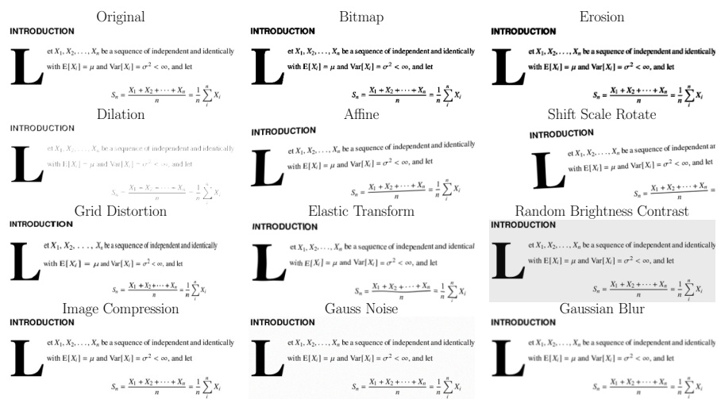
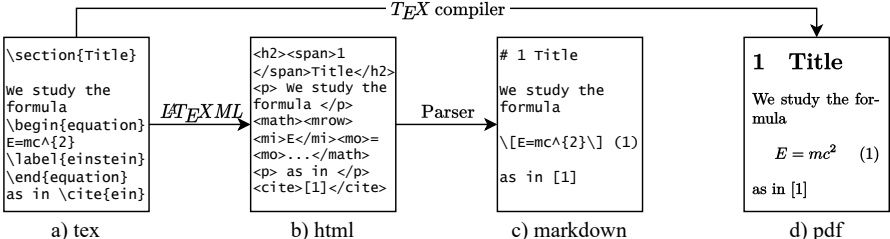
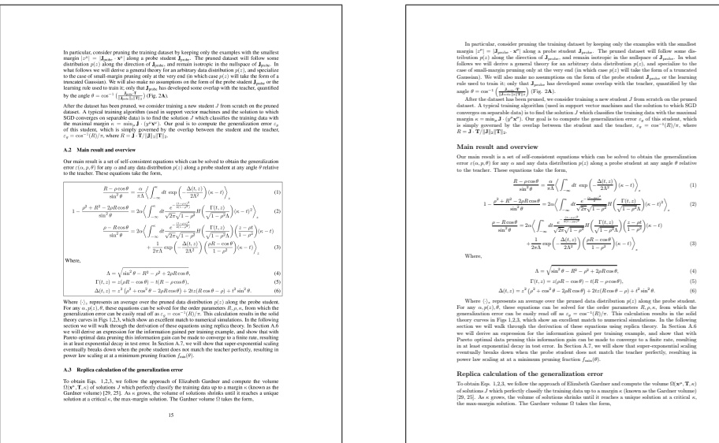
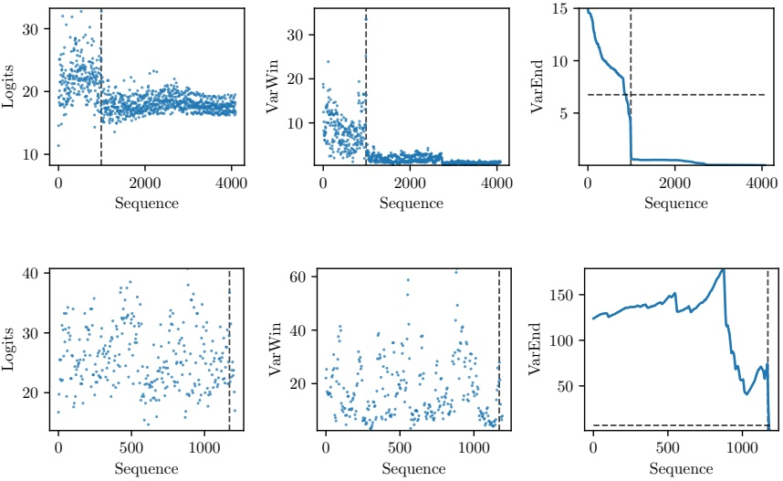
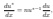
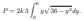
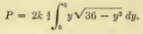
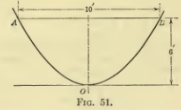

Trang 1
Nougat: Neural Optical Understanding for Academic Documents
Lukas Blecher
Guillem Cucurull
Thomas Scialom
Robert Stojnic
Meta AI
Abstract
Kiến thức khoa học chủ yếu được lưu trữ trong sách và tạp chí khoa học, thường ở định dạng PDF. Tuy nhiên, định dạng PDF gây ra sự mất mát thông tin ngữ nghĩa, đặc biệt là đối với các biểu thức toán học. Chúng tôi đề xuất Nougat (Neural Optical Understanding for Academic Documents), một mô hình Transformer thị giác, có khả năng thực hiện nhiệm vụ nhận dạng ký tự quang học (OCR) để xử lý tài liệu khoa học thành một ngôn ngữ đánh dấu, và chứng minh hiệu quả của mô hình này trên một bộ dữ liệu mới của tài liệu khoa học. Phương pháp được đề xuất cung cấp một giải pháp đầy hứa hẹn để nâng cao khả năng tiếp cận kiến thức khoa học trong thời đại kỹ thuật số, bằng cách kết nối giữa các tài liệu có thể đọc được và văn bản có thể đọc được bằng máy. Chúng tôi công bố các mô hình và mã nguồn để đẩy nhanh công việc trong tương lai về nhận dạng văn bản khoa học.
1 Introduction
Hầu hết kiến thức khoa học được lưu trữ trong sách hoặc xuất bản trên các tạp chí khoa học, thường là ở định dạng Portable Document Format (PDF). Bên cạnh HTML, PDF là định dạng dữ liệu phổ biến thứ hai trên internet, chiếm khoảng 2,4% trong tổng số dữ liệu được thu thập [1]. Tuy nhiên, thông tin được lưu trữ trong các tệp này rất khó để chuyển đổi sang các định dạng khác. Điều này đặc biệt đúng với các tài liệu chuyên sâu, chẳng hạn như các bài nghiên cứu khoa học, nơi thông tin ngữ nghĩa của các biểu thức toán học bị mất.
Các công cụ nhận dạng ký tự quang học (OCR) hiện có, chẳng hạn như Tesseract OCR [2], rất tốt trong việc phát hiện và phân loại các ký tự và từ riêng lẻ trong một hình ảnh, nhưng lại không thể hiểu mối quan hệ giữa chúng do phương pháp xử lý từng dòng. Điều này có nghĩa là chúng xử lý các ký hiệu trên và dưới (superscripts và subscripts) theo cách tương tự như văn bản xung quanh, điều này là một nhược điểm lớn đối với các biểu thức toán học. Trong các ký hiệu toán học như phân số, lũy thừa và ma trận, vị trí tương đối của các ký tự là rất quan trọng.
Việc chuyển đổi các bài nghiên cứu học thuật thành văn bản có thể đọc được bằng máy cũng giúp tăng khả năng tiếp cận và tìm kiếm khoa học nói chung. Thông tin từ hàng triệu bài nghiên cứu học thuật không thể được truy cập đầy đủ vì chúng bị hạn chế bởi định dạng không thể đọc được. Các bộ dữ liệu hiện có, chẳng hạn như bộ dữ liệu S2ORC [3], sử dụng GROBID [4] để trích xuất văn bản từ các bài viết có diện tích $12M^{2}$, nhưng lại thiếu các biểu diễn có ý nghĩa của các phương trình toán học.
Để đạt được mục tiêu này, chúng tôi giới thiệu Nougat, một mô hình dựa trên kiến trúc transformer, có khả năng chuyển đổi hình ảnh của các trang tài liệu thành văn bản đánh dấu có định dạng.
Những đóng góp chính trong bài viết này là:
- Phát hành một mô hình đã được huấn luyện sẵn, có khả năng chuyển đổi một tệp PDF thành một ngôn ngữ đánh dấu nhẹ. Chúng tôi sẽ phát hành mã nguồn và mô hình trên GitHub.
• Chúng tôi giới thiệu một quy trình để tạo bộ dữ liệu phục vụ cho việc ghép nối các tệp PDF với mã nguồn.
• Phương pháp của chúng tôi chỉ dựa vào hình ảnh của một trang, cho phép truy cập các tài liệu và sách đã được quét.
Trang 2
Hình 1: Kiến trúc đơn giản của chúng tôi, lấy cảm hứng từ Donut [28]. Bộ mã hóa Swin Transformer nhận một hình ảnh tài liệu và chuyển đổi nó thành các biểu diễn ẩn, sau đó chuyển đổi chúng thành một chuỗi các token theo phương pháp tự hồi quy.
2 Related Work
Nhận dạng ký tự quang học (OCR) là một lĩnh vực nghiên cứu rộng rãi trong thị giác máy tính, được ứng dụng trong nhiều lĩnh vực khác nhau, chẳng hạn như số hóa tài liệu [2, 5], nhận dạng chữ viết tay và nhận dạng văn bản trong cảnh [6–8].
Cụ thể hơn, việc nhận dạng biểu thức toán học là một lĩnh vực nghiên cứu được quan tâm. Các phương pháp dựa trên ngữ pháp [9–11] để nhận dạng biểu thức toán học viết tay đã được cải tiến thông qua các mô hình mã hóa-giải mã khác nhau. Mô hình tích hợp hoàn toàn [12] đã được thay thế bởi nhiều mô hình giải mã RNN [13–17], cả cho các công thức viết tay và in. Gần đây, mô hình giải mã [18, 19] cũng như mô hình mã hóa [20] đã được thay thế bằng kiến trúc Transformer [21].
Hiểu tài liệu trực quan (VDU) là một chủ đề liên quan khác trong nghiên cứu học sâu, tập trung vào việc trích xuất thông tin liên quan từ nhiều loại tài liệu khác nhau. Các công trình trước đây dựa trên các mô hình đã được huấn luyện, học cách trích xuất thông tin bằng cách kết hợp mô hình văn bản và thông tin bố cục sử dụng kiến trúc Transformer. Gia đình mô hình LayoutLM [22–24] sử dụng nhiệm vụ dự đoán bố cục bị che, để nắm bắt mối quan hệ không gian giữa các yếu tố khác nhau trong tài liệu.
Các giải pháp mã nguồn mở có mục tiêu tương tự như của chúng tôi bao gồm GROBID [4], có chức năng phân tích tài liệu khoa học được tạo ra từ số hóa thành XML, tập trung vào dữ liệu trích dẫn, và pdf2htmlEX [25], có khả năng chuyển đổi các tài liệu PDF được tạo ra từ số hóa thành HTML, đồng thời bảo toàn bố cục và hình thức của tài liệu. Tuy nhiên, cả hai giải pháp này đều không thể khôi phục thông tin ngữ nghĩa của các biểu thức toán học.
3 Model
Các phương pháp VDU trước đây thường dựa vào văn bản được trích xuất từ một công cụ của bên thứ ba [22, 23, 26] hoặc tập trung vào các loại tài liệu như hóa đơn, biên lai hoặc các tài liệu có dạng biểu mẫu [27]. Các nghiên cứu gần đây [28, 29] cho thấy rằng không nhất thiết phải sử dụng một công cụ OCR bên ngoài để đạt được kết quả cạnh tranh trong VDU.
Kiến trúc này là một kiến trúc transformer encoder-decoder [21], cho phép quá trình huấn luyện toàn diện. Chúng tôi dựa trên kiến trúc Donut [28]. Mô hình này không yêu cầu bất kỳ đầu vào hoặc mô-đun liên quan đến nhận dạng văn bản quang học (OCR). Văn bản được nhận dạng một cách gián tiếp bởi mạng. Hình 1 cung cấp một cái nhìn tổng quan về phương pháp này.
Bộ mã hóa nhận một hình ảnh tài liệu $ x \in \mathbb{R}^{3 \times H_0 \times W_0} $, cắt bỏ các phần không cần thiết và thay đổi kích thước hình ảnh để phù hợp với một hình chữ nhật cố định có kích thước $(H, W)$. Nếu hình ảnh nhỏ hơn hình chữ nhật, sẽ thêm các vùng lấp đầy để đảm bảo mỗi hình ảnh có cùng kích thước. Chúng tôi sử dụng Swin Transformer [30], một biến thể của mạng tầm nhìn phân cấp [31], chia hình ảnh thành các cửa sổ cố định không chồng chéo và áp dụng một loạt các lớp tự chú ý để tổng hợp thông tin trên các cửa sổ này. Mô hình tạo ra một chuỗi các đoạn đã mã hóa $ z \in \mathbb{R}^{d \times N} $, trong đó $ d $ là chiều ẩn và $ N $ là số lượng đoạn.
Bộ giải mã: Hình ảnh đã mã hóa z được giải mã thành một chuỗi các token bằng kiến trúc bộ giải mã transformer với cơ chế chú ý chéo. Các token được tạo ra một cách tự động, sử dụng cơ chế chú ý tự thân và cơ chế chú ý chéo để tập trung vào các phần khác nhau của chuỗi đầu vào và đầu ra của bộ mã hóa tương ứng. Cuối cùng, đầu ra được chiếu đến kích thước của từ vựng v, tạo ra các giá trị logits $ \ell \in \mathbb{R}^v $.
Dựa trên nghiên cứu của Kim et al. [28], chúng tôi sử dụng bộ giải mã mBART [32]. Chúng tôi sử dụng cùng bộ tokenizer với Taylor et al. [33] vì mô hình của họ cũng được thiết kế đặc biệt cho lĩnh vực văn bản khoa học.
Trang 3

Hình 2: Danh sách các phương pháp tăng cường hình ảnh được sử dụng trong quá trình huấn luyện, với một ví dụ cụ thể từ một mẫu tài liệu.
3.1 Setup
Chúng tôi tạo ảnh tài liệu với độ phân giải 96 DPI. Do kích thước đầu vào có thể bị giới hạn của mô hình Swin Transformer, chúng tôi chọn kích thước đầu vào $(H, W) = (896, 672)$. Tỷ lệ khung hình nằm giữa định dạng thư từ Mỹ và A4: $\frac{22}{17} < \frac{4}{3} < \sqrt{2}$. Ảnh tài liệu được thay đổi kích thước và sau đó được thêm viền để đạt được kích thước đầu vào mong muốn. Kích thước đầu vào này cho phép chúng tôi sử dụng kiến trúc mô hình Swin cơ bản [30]. Chúng tôi khởi tạo mô hình với trọng số đã được huấn luyện trước. Bộ giải mã Transformer có độ dài chuỗi tối đa là $S = 4096$. Độ dài chuỗi này tương đối lớn vì văn bản trong các bài nghiên cứu khoa học có thể rất chi tiết và cú pháp cho bảng, đặc biệt, đòi hỏi nhiều token. Bộ giải mã BART là một bộ giải mã Transformer chỉ có 10 lớp. Toàn bộ kiến trúc có tổng cộng 350 triệu tham số. Chúng tôi cũng thử nghiệm với một mô hình nhỏ hơn (250 triệu tham số) với độ dài chuỗi hơi nhỏ hơn, $S = 3584$, và chỉ có 4 lớp giải mã, bắt đầu từ mô hình cơ bản đã được huấn luyện trước.
Trong quá trình suy luận, văn bản được tạo ra bằng cách sử dụng thuật toán giải mã "greedily" (tức là chọn lựa từ có khả năng cao nhất ở mỗi bước).
Huấn luyện: Chúng tôi sử dụng trình tối ưu AdamW [34] để huấn luyện trong 3 chu kỳ, với kích thước lô hiệu quả là 192. Do sự không ổn định trong quá trình huấn luyện, chúng tôi chọn tốc độ học ban đầu là $ \text{lr}_{\text{init}} = 5 \cdot 10^{-5} $, và giảm dần tốc độ này với tỷ lệ 0.9996 sau mỗi 15 lần cập nhật, cho đến khi đạt được tốc độ học cuối cùng là $ \text{lr}_{\text{end}} = 7.5 \cdot 10^{-6} $.
3.2 Data Augmentation
Trong các nhiệm vụ nhận dạng hình ảnh, việc sử dụng kỹ thuật tăng cường dữ liệu thường mang lại hiệu quả để cải thiện khả năng tổng quát hóa. Vì chúng tôi chỉ sử dụng các bài nghiên cứu học thuật được tạo ra từ dữ liệu số, chúng tôi cần áp dụng một số biến đổi để mô phỏng những khuyết điểm và sự khác biệt của các tài liệu đã quét. Các biến đổi này bao gồm: xói mòn, mở rộng, nhiễu Gaussian, làm mờ Gaussian, chuyển đổi bitmap, nén ảnh, biến dạng lưới và biến đổi đàn hồi [35]. Mỗi biến đổi đều có xác suất cố định để được áp dụng cho một hình ảnh cụ thể. Các biến đổi này được triển khai trong thư viện Albumentations [36]. Để có cái nhìn tổng quan về hiệu quả của từng biến đổi, vui lòng xem Hình 2.
Trong quá trình huấn luyện, chúng tôi cũng thêm nhiễu vào văn bản thực tế bằng cách thay thế ngẫu nhiên các từ. Chúng tôi nhận thấy rằng việc này giúp giảm đáng kể tình trạng "sập" vào một vòng lặp lặp đi lặp lại. Để biết thêm chi tiết, vui lòng tham khảo phần 5.4.
Trang 4

b) HTML
Hình 3: Xử lý dữ liệu. Tệp nguồn được chuyển đổi thành HTML, sau đó chuyển đổi thành Markdown. a) Nguồn LaTeX do tác giả cung cấp. b) Tệp HTML được tính toán từ nguồn LaTeX bằng LaTeXML. c) Tệp Markdown được phân tích từ tệp HTML. d) Tệp PDF do tác giả cung cấp.
4 Datasets
Theo hiểu biết của chúng tôi, hiện không có bộ dữ liệu nào kết hợp giữa các trang PDF và mã nguồn tương ứng. Do đó, chúng tôi đã tạo một bộ dữ liệu riêng từ các bài báo có sẵn trên arXiv. $^{4}$ Để tăng tính đa dạng về bố cục, chúng tôi cũng bao gồm một tập hợp con của bộ dữ liệu không thương mại từ PubMed Central $^{5}$. Trong quá trình tiền huấn luyện, một phần của Thư viện Tài liệu Công nghiệp $^{6}$ cũng được sử dụng. Xin xem Bảng A.1 để biết thành phần của bộ dữ liệu.
arXiv: Chúng tôi đã thu thập mã nguồn và tạo các file PDF từ 1.748.201 bài viết được đăng trên arXiv. Để đảm bảo định dạng nhất quán, chúng tôi đã xử lý các file nguồn bằng LaTeXML $^{7}$ và chuyển chúng thành các file HTML5. Bước này rất quan trọng vì nó chuẩn hóa và loại bỏ sự mơ hồ trong mã nguồn LaTeX, đặc biệt là trong các biểu thức toán học. Quá trình chuyển đổi bao gồm thay thế các macro được định nghĩa bởi người dùng, chuẩn hóa khoảng trắng, thêm dấu ngoặc tùy chọn, chuẩn hóa bảng, và thay thế các tham chiếu và trích dẫn bằng số chính xác.
Sau đó, chúng tôi phân tích các tệp HTML và chuyển chúng thành một ngôn ngữ đánh dấu nhẹ, hỗ trợ nhiều thành phần như tiêu đề, văn bản in đậm và nghiêng, thuật toán, công thức toán học trực tiếp và hiển thị, cũng như bảng LaTeX. Như vậy, chúng tôi đảm bảo rằng mã nguồn được định dạng đúng và sẵn sàng cho các bước xử lý tiếp theo.
Quy trình này được minh họa trong Hình 3.
PMC Chúng cũng đã xử lý các bài viết từ PMC, nơi các tệp XML chứa thông tin ngữ nghĩa, cùng với tệp PDF. Chúng ta chuyển đổi các tệp này sang định dạng đánh dấu giống như các bài viết trên arXiv. Chúng tôi quyết định sử dụng ít các bài viết từ PMC hơn, vì các tệp XML không phải lúc nào cũng chứa đầy đủ thông tin ngữ nghĩa. Thường thì các phương trình và bảng được lưu dưới dạng hình ảnh, và việc phát hiện những trường hợp này không hề dễ dàng, điều này dẫn đến quyết định giới hạn việc sử dụng các bài viết từ PMC chỉ trong giai đoạn tiền huấn luyện.
Các tệp XML được phân tích bằng cùng một ngôn ngữ đánh dấu như đã mô tả ở trên.
IDL: Đây là một bộ sưu tập tài liệu do các ngành công nghiệp tạo ra, có ảnh hưởng đến sức khỏe cộng đồng, và được quản lý bởi Thư viện Đại học California, San Francisco. Biten et al. [37] cung cấp văn bản OCR chất lượng cao từ bộ dữ liệu IDL. Bộ này không bao gồm định dạng văn bản và chỉ được sử dụng cho việc huấn luyện ban đầu để dạy mô hình cách nhận dạng văn bản từ tài liệu đã quét.
4.1 Splitting the pages
Chúng tôi chia các tệp markdown theo các khoảng trắng trang trong tệp PDF và chuyển đổi mỗi trang thành hình ảnh để tạo bộ dữ liệu cuối cùng. Trong quá trình biên dịch, trình biên dịch LaTeX tự động xác định các khoảng trắng trang của tệp PDF. Vì chúng tôi không biên dịch lại các nguồn LaTeX cho mỗi bài viết, chúng tôi phải chia tệp nguồn thành các phần, tương ứng với các trang khác nhau. Để thực hiện điều này, chúng tôi sử dụng văn bản được nhúng trong trang PDF và so khớp với văn bản nguồn.
Tuy nhiên, các số liệu và bảng trong file PDF có thể không tương ứng với vị trí của chúng trong mã nguồn. Để giải quyết vấn đề này,
Trang 5
Hình 4: Ví dụ về việc chia các đoạn văn trong mã nguồn thành các trang khác nhau. Các điểm màu xanh biểu thị chỉ số trang được dự đoán bởi thuật toán SVM.
Chúng tôi loại bỏ các yếu tố này trong bước tiền xử lý bằng cách sử dụng pdffigures2 [38]. Sau đó, các chú thích đã nhận dạng được so sánh với các chú thích trong tệp XML và được khớp dựa trên khoảng cách Levenshtein [39]. Sau khi tài liệu nguồn được chia thành các trang riêng lẻ, các hình và bảng đã loại bỏ được đưa trở lại cuối mỗi trang. Để cải thiện độ khớp, chúng tôi cũng thay thế các ký tự Unicode trong văn bản PDF bằng các lệnh LaTeX tương ứng bằng thư viện pylatexenc $ ^{8} $.
So sánh dựa trên "Bag of Words"
Đầu tiên, chúng tôi trích xuất các dòng văn bản từ tệp PDF bằng cách sử dụng MuPDF [9] và tiền xử lý chúng để loại bỏ số trang và các tiêu đề/chân trang tiềm ẩn. Sau đó, chúng tôi sử dụng mô hình "Bag of Words" [40] với bộ phân tích TF-IDF và bộ phân loại Support Vector Machine tuyến tính. Mô hình được huấn luyện trên các dòng văn bản từ PDF, với số trang được sử dụng làm nhãn. Tiếp theo, chúng tôi chia mã nguồn LaTeX thành các đoạn và dự đoán số trang cho mỗi đoạn.
Hoàn hảo nhất, các dự đoán sẽ tạo thành một hàm dạng bậc thang, nhưng trong thực tế, tín hiệu sẽ bị nhiễu. Để tìm ra các điểm biên tốt nhất, chúng tôi sử dụng một logic tương tự như cây quyết định và giảm thiểu một chỉ số dựa trên độ không đồng nhất của Gini.
$$$$ G_{[a,b]}(i)=(b-a)\cdot\left(1-p_{[a,b]}^{2}(i)-p_{[a,b]}^{2}(i+1)\right), $$$$
trong đó $ p_{[a,b]}(i) $ là xác suất chọn một phần tử có số trang dự đoán là i trong khoảng [a, b], trong đó [a, b] mô tả các đoạn văn (phần tử) đã được xem xét để chia.
Vậy, vị trí chia tốt nhất t trong khoảng [a, b] là
$$$$ \hat{t}_{i}=\arg\min_{t}\left(G_{[a,t]}(i)+G_{[t,b]}(i)\right). $$$$
Quá trình tìm kiếm bắt đầu với tất cả các đoạn văn, và sau mỗi lần chuyển trang, giới hạn dưới của khoảng tìm kiếm được đặt thành vị trí chia trước đó. Hãy xem Hình 4 để minh họa một ví dụ về một trang.
So sánh tương tự: Sau khi phân chia tài liệu sơ bộ này, chúng tôi cố gắng tìm vị trí chính xác trong đoạn văn. Điều này được thực hiện bằng cách so sánh văn bản gốc xung quanh vị trí dự đoán phân chia với các câu cuối cùng của trang trước và các câu đầu tiên của trang tiếp theo trong văn bản PDF được nhúng, sử dụng thư viện fuzzysearch $^{10}$. Nếu hai điểm phân chia nằm ở cùng một vị trí trong văn bản gốc, thì điểm phân trang được coi là "chính xác" và nhận được điểm 1. Ngược lại, nếu các vị trí phân chia khác nhau, thì điểm có khoảng cách Levenshtein chuẩn nhỏ nhất sẽ được chọn và nhận được điểm là 1 trừ đi khoảng cách đó. Để được đưa vào bộ dữ liệu, một trang PDF phải có điểm trung bình ít nhất là 0,9 cho cả điểm phân trang. Điều này dẫn đến tỷ lệ chấp nhận khoảng 47% trên tất cả các trang.
4.2 Ground truth artifacts
Vì bộ dữ liệu đã được xử lý trước bằng LaTeXML, phiên bản đánh dấu của mã nguồn có thể chứa các thành phần và lệnh từ các gói không được hỗ trợ. Tệp HTML có thể chứa tiêu đề phân đoạn với số thứ tự, mặc dù chúng không được đánh số trong tệp PDF. Ngoài ra, có thể xảy ra trường hợp hình ảnh hoặc bảng bị thiếu trong bộ dữ liệu gốc do lỗi xử lý.
Trang 6
Ngoài ra, thuật toán chia đoạn của mã nguồn đôi khi sẽ bao gồm văn bản từ trang trước hoặc cắt bỏ các từ ở cuối. Điều này đặc biệt đúng với các ký tự "không hiển thị" được sử dụng để định dạng, chẳng hạn như văn bản in nghiêng, văn bản đậm hoặc tiêu đề phần.
Đối với các bài viết trong PMC, các công thức toán học được viết bằng Unicode hoặc chữ in nghiêng, trong khi các phương trình hoặc bảng toán học được hiển thị thường được đưa vào dưới dạng hình ảnh và do đó sẽ bị bỏ qua.
Mỗi vấn đề này đều làm giảm chất lượng dữ liệu tổng thể. Tuy nhiên, số lượng lớn các mẫu huấn luyện giúp bù đắp những sai sót nhỏ này.
5 Results & Evaluation

$$$$ \frac{R-\rho\cos\theta}{\sin^{2}\theta}=\frac{\alpha}{\pi\Lambda}\Biggl\langle\int_{-\infty}^{\infty}d t\;\exp\left(-\frac{\Delta(t,z)}{2\Lambda^{2}}\right)\left(\kappa-t\right)\Biggr\rangle_{s} $$$$
(1)
$$$$ 1-\frac{\rho^{2}+R^{2}-2\rho R\cos\theta}{\sin^{2}\theta}=2\alpha\Biggl\langle\int_{-\infty}^{\infty}d t\frac{e^{-\frac{(\alpha-\mu_{0})^{2}}{2}}}{\sqrt{2\pi}\sqrt{1-\rho^{2}}}H\left(\frac{\Gamma(t,z)}{\sqrt{1-\rho^{2}}\Lambda}\right)(\kappa-t)^{2}\Biggr\rangle, $$$$
(2)
$$$$ \frac{\rho-R\cos\theta}{\sin^{2}\theta}=2\alpha\bigg(\int_{-\infty}^{\infty}dt\frac{e^{-\frac{t-p\alpha}{2(1-p\alpha)^{2}}}}{\sqrt{2\pi}\sqrt{1-p^{2}}}H\bigg(\frac{\Gamma(t,z)}{\sqrt{1-p^{2}}\Lambda}\bigg)\bigg(\frac{z-\rho t}{1-\rho^{2}}\bigg)(\kappa-t) $$$$
$$$$ +\frac{1}{2\pi\Lambda}\exp\left(-\frac{\Delta(t,z)}{2\Lambda^{2}}\right)\left(\frac{\rho R-\cos\theta}{1-\rho^{2}}\right)\left(\kappa-t\right)\Biggr)_{s} $$$$
(3)
(4)
Hình 5: Ví dụ về một trang chứa nhiều phương trình toán học, lấy từ [41]. Bên trái: Hình ảnh của một trang trong tài liệu, bên phải: Kết quả mô hình được chuyển đổi sang LaTeX và hiển thị lại dưới dạng PDF. Các ví dụ về tài liệu đã quét có thể tìm thấy trong phụ lục B.
Trong phần này, chúng tôi thảo luận về kết quả và hiệu suất của mô hình. Để tham khảo ví dụ, vui lòng xem Hình 5 hoặc truy cập phần B. Mô hình chỉ tập trung vào các nội dung và tính năng quan trọng của trang. Phần khung xung quanh các phương trình sẽ bị bỏ qua.
5.1 Metrics
Chúng tôi báo cáo các chỉ số sau trên tập dữ liệu kiểm thử của chúng tôi.
Khoảng cách chỉnh sửa: Khoảng cách chỉnh sửa, hay còn gọi là khoảng cách Levenshtein [39], đo lường số lượng các thao tác chỉnh sửa (thêm, xóa, thay thế) cần thiết để biến một chuỗi thành chuỗi khác. Trong công trình này, chúng tôi xem xét khoảng cách chỉnh sửa chuẩn, trong đó chúng tôi chia cho tổng số ký tự.
BLEU: Chỉ số BLEU [42] ban đầu được giới thiệu để đo lường chất lượng của văn bản đã được dịch máy từ một ngôn ngữ sang ngôn ngữ khác. Chỉ số này tính toán một điểm dựa trên số lượng các cụm từ (n-grams) trùng khớp giữa câu dự đoán và câu tham khảo.
METEOR: Một chỉ số đánh giá dịch máy khác, tập trung vào độ chính xác hơn là độ bao phủ, được giới thiệu trong [43].
Độ chính xác (F-measure): Chúng tôi cũng tính toán điểm F1 và báo cáo độ chính xác và độ bao phủ.
Trang 7
| Method | Modality | Edit distance $ \downarrow $ | BLEU $ \uparrow $ | METEOR $ \uparrow $ | Precision $ \uparrow $ | Recall $ \uparrow $ | F1 $ \uparrow $ |
| PDF | All | 0.255 | 65.8 | 82.1 | 77.1 | 81.4 | 79.2 |
| GROBID | All | 0.312 | 55.6 | 71.9 | 74.0 | 72.1 | 73.0 |
| Tables | 0.626 | 25.1 | 64.5 | 61.4 | 80.7 | 69.7 |
| + LaTeX OCR | Plain text | 0.363 | 57.4 | 69.2 | 82.1 | 70.5 | 75.9 |
| Math | 0.727 | 0.3 | 5.0 | 11.0 | 8.6 | 9.7 |
| Nougat small (250M $ ^{*} $) | All | 0.073 | 88.9 | 92.8 | 93.6 | 92.2 | 92.9 |
| Tables | 0.220 | 68.5 | 78.6 | 75.0 | 79.8 | 77.3 |
| Plain text | 0.058 | 91.0 | 94.3 | 96.1 | 95.3 | 95.7 |
| Math | 0.117 | 56.0 | 74.7 | 77.1 | 76.8 | 76.9 |
| Nougat base (350M $ ^{*} $) | All | 0.071 | 89.1 | 93.0 | 93.5 | 92.8 | 93.1 |
| Tables | 0.211 | 69.7 | 79.1 | 75.4 | 80.7 | 78.0 |
| Plain text | 0.058 | 91.2 | 94.6 | 96.2 | 95.3 | 95.7 |
| Math | 0.128 | 56.9 | 75.4 | 76.5 | 76.6 | 76.5 |
Bảng 1: Kết quả trên tập dữ liệu thử nghiệm arXiv. PDF là văn bản được nhúng trong tệp PDF. Phương thức "Tất cả" đề cập đến văn bản đầu ra mà không bị chia nhỏ. *Số lượng tham số.
5.2 Text modalities
Trong một bài báo nghiên cứu khoa học, có ba loại văn bản khác nhau: 1) văn bản thuần túy, chiếm phần lớn tài liệu; 2) biểu thức toán học; và 3) bảng biểu. Điều quan trọng là phải xem xét từng thành phần này một cách riêng biệt trong quá trình đánh giá. Điều này là cần thiết vì trong LaTeX, có nhiều cách để biểu diễn cùng một biểu thức toán học. Mặc dù bước tiền xử lý LaTeXML đã loại bỏ một số sự khác biệt, nhưng vẫn còn nhiều sự mơ hồ, chẳng hạn như thứ tự của các chữ hậu tố và tiền tố, các lệnh tương đương với các ký hiệu khác nhau (stackrel, atop, substack hoặc frac, over), các lệnh có thể thay thế cho nhau tùy theo ngữ cảnh (bm, mathbf, boldsymbol, bfor\left(,\big(,\,etc.\right), lệnh khoảng trắng, các lớp ngoặc bổ sung, và nhiều hơn nữa). Do đó, có thể có sự khác biệt giữa kết quả dự đoán và giá trị thực, ngay cả khi các công thức hiển thị có vẻ giống nhau.
Ngoài ra, việc xác định chính xác điểm mà môi trường toán học inline kết thúc và văn bản bắt đầu khi viết số và dấu chấm câu đôi khi không thể thực hiện được (Ví dụ: $\mathrm{H}_{-}\{0\}\$1, so với H$\_{0}\}1, \rightarrow H_{0}1, so với H_{0}1). Sự mơ hồ này làm giảm cả điểm số cho toán học và văn bản thông thường.
Điểm số dự kiến cho các biểu thức toán học thấp hơn so với văn bản thông thường.
5.3 Comparison
Chúng tôi trình bày kết quả của chúng tôi trong Bảng 1. Như dự đoán, các biểu thức toán học có sự phù hợp kém nhất với dữ liệu thực tế. Đối với văn bản thuần túy, hầu hết sự khác biệt đến từ sự mơ hồ về định dạng và văn bản bị thiếu do các biểu thức toán học được đưa trực tiếp vào, như đã mô tả ở trên. Định dạng đầu ra của GROBID là một tệp XML, mà chúng tôi chuyển đổi thành một ngôn ngữ đánh dấu tương thích, tương tự như các tệp PMC hoặc arXiv. Về cơ bản, GROBID cung cấp hỗ trợ cho các công thức trong đầu ra của nó, nhưng nó xác định và lưu trữ chúng dưới dạng các biểu diễn Unicode được nhúng trong PDF. Chúng tôi thay thế mỗi ký tự Unicode bằng lệnh LaTeX tương ứng để tăng tính tương đồng. Ngoài ra, GROBID nhầm lẫn các biểu thức toán học nhỏ được đưa trực tiếp vào thành văn bản. Đối với các công thức đã được xác định, GROBID lưu trữ tọa độ của hộp giới hạn. Chúng tôi sửa đổi chương trình bằng cách gửi đoạn văn cho phần mềm nhận dạng công thức bên ngoài LaTeX-OCR [20]. Bằng cách này, chúng tôi cũng có thể nhận được tín hiệu về tính toán. Các kết quả được báo cáo trong phần này khá kém, chủ yếu do số lượng công thức bị bỏ qua bởi GROBID và độ chính xác của việc dự đoán phương trình bị ảnh hưởng bởi chất lượng của các hộp giới hạn. Hiệu suất của văn bản được nhúng trong PDF tốt hơn so với GROBID, điều này là do sự khác biệt về định dạng cho trang tiêu đề hoặc phần tham khảo.
Cả mô hình Nougat nhỏ và mô hình cơ bản đều có khả năng vượt trội so với phương pháp khác và đạt được điểm cao trên tất cả các tiêu chí. Chúng tôi nhận thấy rằng hiệu suất của mô hình nhỏ tương đương với mô hình cơ bản lớn hơn.
Trang 8

Hình 6: Ví dụ về phát hiện sự lặp lại trên giá trị logit. Trên cùng: Mẫu có sự lặp lại, Dưới cùng: Mẫu không có sự lặp lại. Bên trái: Điểm logit cao nhất cho mỗi từ trong chuỗi $ \ell(x) $, Trung tâm: Độ biến thiên của cửa sổ trượt trên các giá trị logit $ \text{VarWin}_B[\ell](x) $, Bên phải: Độ biến thiên của độ biến thiên từ vị trí đến cuối $ \text{VarEnd}_B[\ell](x) $
5.4 Repetitions during inference
Chúng ta nhận thấy rằng mô hình này chỉ lặp lại một câu hoặc đoạn văn một cách liên tục. Mô hình không thể thoát khỏi trạng thái này một cách tự động. Trong trường hợp đơn giản nhất, câu hoặc đoạn văn cuối cùng được lặp đi lặp lại liên tục. Chúng tôi đã quan sát hành vi này trên 1,5% trang trong tập dữ liệu kiểm tra, nhưng tần suất này tăng lên đối với các tài liệu không thuộc cùng lĩnh vực. Việc bị mắc kẹt trong một vòng lặp lặp lại là một vấn đề đã biết với các mô hình dựa trên Transformer, khi sử dụng phương pháp giải mã "greedily" [44]. Ngoài ra, đôi khi mô hình có thể thay đổi một vài từ giữa hai câu, do đó, việc phát hiện sự lặp lại một cách nghiêm ngặt sẽ không đủ. Việc phát hiện các dự đoán mà mô hình tự tính toán số lần lặp lại cũng rất khó, điều này đôi khi xảy ra trong phần tham khảo.
Nhìn chung, chúng ta nhận thấy hành vi này sau khi mô hình mắc lỗi. Mô hình không thể phục hồi sau khi gặp sự cố.
Cải thiện khả năng tránh lặp lại. Vì vậy, chúng tôi giới thiệu một sự thay đổi ngẫu nhiên trong quá trình huấn luyện. Điều này giúp mô hình học cách xử lý các token bị dự đoán sai. Đối với mỗi ví dụ huấn luyện, có một xác suất cố định mà một token ngẫu nhiên sẽ được thay thế bằng một token khác được chọn ngẫu nhiên. Quá trình này tiếp tục cho đến khi số lượng token mới được lấy vượt quá một ngưỡng đã định (trong trường hợp này là 10%). Chúng tôi không quan sát thấy sự giảm hiệu suất với phương pháp này, nhưng chúng tôi nhận thấy sự giảm đáng kể trong số lượng lặp lại. Đặc biệt đối với các tài liệu không thuộc lĩnh vực, chúng tôi đã thấy sự giảm 32% trong số lượng trang không thể chuyển đổi.
Phát hiện sự lặp lại: Vì chúng tôi tạo ra tối đa 4096 token, mô hình sẽ dừng lại ở một thời điểm nào đó. Tuy nhiên, việc chờ đợi một token "kết thúc câu" là rất kém hiệu quả và tốn nhiều tài nguyên, đặc biệt khi không có token nào xuất hiện. Để phát hiện sự lặp lại trong quá trình suy luận, chúng tôi xem xét giá trị logit lớn nhất $ \ell_i = \max \ell_i $ của token thứ i. Chúng tôi nhận thấy rằng các giá trị logit sau khi "sụp đổ" có thể được phân tách bằng cách sử dụng quy tắc sau: Đầu tiên, tính phương sai của các giá trị logit cho một cửa sổ trượt có kích thước $ B = 15 $.
$$$$ \mathrm{VarWin}_{B}[\ell](x)=\frac{1}{B}\sum_{i=x}^{x+B}\left(\ell_{i}-\frac{1}{B}\sum_{j=x}^{x+B}\ell_{j}\right)^{2}. $$$$
Trang 9
Ở đây, $\ell$ là tín hiệu của các giá trị logit và x là chỉ số. Sử dụng tín hiệu mới này, chúng tôi tính lại phương sai, nhưng lần này từ điểm x đến cuối chuỗi.
$$$$ \mathrm{Var}\mathrm{End}_{B}[\ell](x)=\frac{1}{S-x}\sum_{i=x}^{S}\left(\mathrm{Var}\mathrm{Win}_{B}[\ell](i)-\frac{1}{S-x}\sum_{j=x}^{S}\mathrm{Var}\mathrm{Win}_{B}[\ell](i)\right)^{2}. $$$$
Nếu tín hiệu này giảm xuống dưới một ngưỡng nhất định (chúng tôi chọn 6.75) và duy trì ở mức này trong phần còn lại của chuỗi, chúng tôi sẽ phân loại chuỗi này là có sự lặp lại.
Trong quá trình suy luận, rõ ràng không thể tính toán đến cuối chuỗi nếu mục tiêu của chúng ta là dừng quá trình tạo ra ở một thời điểm trước. Do đó, chúng tôi sẽ làm việc với một tập hợp con gồm 200 token cuối cùng và một nửa ngưỡng. Sau khi quá trình tạo ra hoàn thành, quy trình như đã mô tả ở trên sẽ được lặp lại cho toàn bộ chuỗi.
5.5 Limitations & Future work
Tính hữu dụng của mô hình bị giới hạn bởi một số yếu tố. Thứ nhất, vấn đề về sự lặp lại như đã nêu trong phần 5.4. Mô hình được huấn luyện trên các bài nghiên cứu, điều này có nghĩa là nó hoạt động tốt nhất với các tài liệu có cấu trúc tương tự. Tuy nhiên, nó vẫn có thể chuyển đổi chính xác các loại tài liệu khác.
Hầu hết các mẫu dữ liệu đều được viết bằng tiếng Anh. Các thử nghiệm ban đầu trên một mẫu nhỏ cho thấy hiệu suất của mô hình với các ngôn ngữ dựa trên tiếng Latinh là chấp nhận được, mặc dù bất kỳ ký tự đặc biệt nào từ các ngôn ngữ này sẽ được thay thế bằng ký tự tương đương nhất từ bảng chữ cái Latinh. Các ngôn ngữ sử dụng chữ viết không phải tiếng Latinh sẽ dẫn đến việc lặp lại ngay lập tức.
Tốc độ tạo: Trên một máy có card đồ họa NVIDIA A10G với 24GB VRAM, chúng ta có thể xử lý 6 trang cùng lúc. Tốc độ tạo phụ thuộc rất nhiều vào lượng văn bản trên mỗi trang. Với số lượng token trung bình khoảng 1400, chúng ta có thời gian tạo trung bình là 19,5 giây cho mỗi lô đối với mô hình cơ bản mà không có bất kỳ tối ưu hóa nào. So với các phương pháp truyền thống (GROBID 10.6 PDF/s [4]), tốc độ này rất chậm, nhưng nó không giới hạn ở các PDF được tạo ra kỹ thuật số và có thể phân tích chính xác các biểu thức toán học.
Công việc trong tương lai: Mô hình được huấn luyện trên một trang tại một thời điểm, mà không có thông tin về các trang khác trong tài liệu. Điều này dẫn đến sự không nhất quán trong toàn bộ tài liệu. Đặc biệt, trong phần danh mục tài liệu tham khảo, mô hình được huấn luyện trên các phong cách hoặc tiêu đề khác nhau, trong đó đôi khi các số bị bỏ qua hoặc bị "tưởng tượng". Mặc dù việc xử lý từng trang riêng biệt giúp tăng khả năng song song và mở rộng, nhưng điều này có thể làm giảm chất lượng của tài liệu đã được kết hợp.
Thách thức chính cần giải quyết là xu hướng mô hình bị "bế tắc" vào một vòng lặp lặp đi lặp lại, đây là một vấn đề sẽ được nghiên cứu thêm trong tương lai.
6 Conclusion
Trong công trình này, chúng tôi giới thiệu Nougat, một mô hình dựa trên kiến trúc encoder-decoder transformer có thể được huấn luyện hoàn toàn, được thiết kế để chuyển đổi các trang tài liệu thành định dạng đánh dấu. Chúng tôi áp dụng các tiến bộ gần đây trong lĩnh vực hiểu tài liệu trực quan vào một nhiệm vụ nhận dạng ký tự quang học (OCR) mới. Khác với các phương pháp khác, phương pháp của chúng tôi không dựa vào OCR hoặc biểu diễn văn bản được nhúng, mà chỉ dựa vào trang tài liệu đã được chuyển đổi thành dạng raster. Hơn nữa, chúng tôi đã trình bày một quy trình tự động và không giám sát để tạo bộ dữ liệu, mà chúng tôi đã sử dụng để huấn luyện thành công mô hình cho việc chuyển đổi tài liệu khoa học thành định dạng đánh dấu. Nhìn chung, phương pháp của chúng tôi đã thể hiện tiềm năng lớn không chỉ để trích xuất văn bản từ các tệp PDF được tạo ra kỹ thuật số, mà còn để chuyển đổi các tài liệu đã quét và sách giáo khoa. Chúng tôi hy vọng rằng công trình này có thể là một điểm khởi đầu cho các nghiên cứu trong tương lai trong các lĩnh vực liên quan.
Tất cả mã nguồn cho việc đánh giá, huấn luyện mô hình và tạo bộ dữ liệu có thể được truy cập tại https://github.com/facebookresearch/nougat.
7 Acknowledgments
Xin cảm ơn Ross Taylor, Marcin Kardas, Iliyan Zarov, Kevin Stone, Jian Xiang Kuan, Andrew Poulton và Hugo Touvron vì những đóng góp và phản hồi quý báu của các bạn.
Xin cảm ơn Faisal Azhar vì sự hỗ trợ trong suốt quá trình thực hiện dự án.
References
[1] Sebastian Spiegler. Statistics of the Common Crawl Corpus 2012, June 2013. URL https://docs.google.com/file/d/1_9698uglerxB9nAglvaHkEgU-iZNm1TvVGucW7245-WGvZq47teNpb_uL5N9.
Trang 10
[2] R. Smith. An Overview of the Tesseract OCR Engine. In Ninth International Conference on Document Analysis and Recognition (ICDAR 2007) Vol 2, pages 629–633, Curitiba, Parana, Brazil, September 2007. IEEE. ISBN 978-0-7695-2822-9. doi: 10.1109/ICDAR.2007.4376991. URL http://ieeexplore.ieee.org/document/4376991/. ISSN: 1520-5363.
[3] Kyle Lo, Lucy Lu Wang, Mark Neumann, Rodney Kinney, and Daniel Weld. S2ORC: The Semantic Scholar Open Research Corpus. In Proceedings of the 58th Annual Meeting of the Association for Computational Linguistics, pages 4969–4983, Online, July 2020. Association for Computational Linguistics. doi: 10.18653/v1/2020.acl-main.447. URL https://aclanthology.org/2020.acl-main.447.
[4] Patrice Lopez. GROBID, February 2023. URL https://github.com/kermitt2/grobid. original-date: 2012-09-13T15:48:54Z.
[5] Bastien Moysset, Christopher Kermorvant, and Christian Wolf. Full-Page Text Recognition: Learning Where to Start and When to Stop, April 2017. URL http://arxiv.org/abs/1704.08628. arXiv:1704.08628 [cs].
[6] Darwin Bautista and Rowel Atienza. Scene Text Recognition with Permuted Autoregressive Sequence Models, July 2022. URL http://arxiv.org/abs/2207.06966. arXiv:2207.06966 [cs] version: 1.
[7] Minghao Li, Tengchao Lv, Jingye Chen, Lei Cui, Yijuan Lu, Dinei Florencio, Cha Zhang, Zhoujun Li, and Furu Wei. TrOCR: Transformer-based Optical Character Recognition with Pre-trained Models, September 2022. URL http://arxiv.org/abs/2109.10282. arXiv:2109.10282 [cs].
[8] Daniel Hernandez Diaz, Siyang Qin, Reeve Ingle, Yasuha Fujii, and Alessandro Bissacco. Rethinking Text Line Recognition Models, April 2021. URL http://arxiv.org/abs/2104.07787. arXiv:2104.07787 [cs].
[9] Scott MacLean and George Labahn. A new approach for recognizing handwritten mathematics using relational grammars and fuzzy sets. International Journal on Document Analysis and Recognition (IJDAR), 16(2):139–163, June 2013. ISSN 1433-2825. doi: 10.1007/s10032-012-0184-x. URL https://doi.org/10.1007/s10032-012-0184-x.
[10] Ahmad-Montaser Awal, Harold Mouchre, and Christian Viard-Gaudin. A global learning approach for an online handwritten mathematical expression recognition system. Pattern Recognition Letters, 35(C):68–77, January 2014. ISSN 0167-8655.
[11] Francisco Álvaro, Joan-Andreu Sánchez, and José-Miguel Benedict. Recognition of on-line handwritten mathematical expressions using 2D stochastic context-free grammars and hidden Markov models. Pattern Recognition Letters, 35:58–67, January 2014. ISSN 0167-8655. doi: 10.1016/j.patrec.2012.09.023. URL https://www.sciencedirect.com/science/article/pii/S016786551200308X.
[12] Zuoyu Yan, Xiaode Zhang, Liangcai Gao, Ke Yuan, and Zhi Tang. ConvMath: A Convolutional Sequence Network for Mathematical Expression Recognition, December 2020. URL http://arxiv.org/abs/2012.12619. arXiv:2012.12619 [cs].
[13] Yuntian Deng, Anssi Kanervisto, Jeffrey Ling, and Alexander M. Rush. Image-to-Markup Generation with Coarse-to-Fine Attention, September 2016. URL http://arxiv.org/abs/1609.04938. arXiv:1609.04938 [cs] version: 1.
[14] Anh Duc Le and Masaki Nakagawa. Training an End-to-End System for Handwritten Mathematical Expression Recognition by Generated Patterns. In 2017 14th IAPR International Conference on Document Analysis and Recognition (ICDAR), volume 01, pages 1056–1061, November 2017. doi: 10.1109/ICDAR.2017.175. ISSN: 2379-2140.
[15] Sumeet S. Singh. Teaching Machines to Code: Neural Markup Generation with Visual Attention, June 2018. URL http://arxiv.org/abs/1802.05415. arXiv:1802.05415 [cs].
[16] Jianshu Zhang, Jun Du, and Lirong Dai. Multi-Scale Attention with Dense Encoder for Handwritten Mathematical Expression Recognition, January 2018. URL http://arxiv.org/abs/1801.03530. arXiv:1801.03530 [cs].
[17] Zelun Wang and Jyh-Charn Liu. Translating Math Formula Images to LaTeX Sequences Using Deep Neural Networks with Sequence-level Training, September 2019. URL http://arxiv.org/abs/1908.11415. arXiv:1908.11415 [cs, stat].
[18] Wenqi Zhao, Liangcai Gao, Zuoyu Yan, Shuai Peng, Lin Du, and Ziyin Zhang. Handwritten Mathematical Expression Recognition with Bidirectionally Trained Transformer, May 2021. URL http://arxiv.org/abs/2105.02412. arXiv:2105.02412 [cs].
[19] Mahshad Mahdavi, Richard Zanibbi, Harold Mouchere, Christian Viard-Gaudin, and Utpal Garain. ICDAR 2019 CROHME + TFD: Competition on Recognition of Handwritten Mathematical Expressions and Typeset Formula Detection. In 2019 International Conference on Document Analysis and Recognition (ICDAR), pages 1533–1538, Sydney, Australia, September 2019. IEEE. ISBN 978-1-72813-014-9. doi: 10.1109/ICDAR.2019.00247. URL https://ieeexplore.ieee.org/document/8978036/.
Trang 11
[20] Lukas Blecher. pix2tex - LaTeX OCR, February 2023. URL https://github.com/lukas-blecher/LaTeX-OCR. original-date: 2020-12-11T16:35:13Z.
[21] Ashish Vaswani, Noam Shazeer, Niki Parmar, Jakob Uszkoreit, Llion Jones, Aidan N. Gomez, Lukasz Kaiser, and Illia Polosukhin. Attention Is All You Need, December 2017. URL http://arxiv.org/abs/1706.03762. arXiv:1706.03762 [cs].
[22] Yiheng Xu, Minghao Li, Lei Cui, Shaohan Huang, Furu Wei, and Ming Zhou. LayoutLM: Pre-training of Text and Layout for Document Image Understanding. In Proceedings of the 26th ACM SIGKDD International Conference on Knowledge Discovery & Data Mining, pages 1192–1200, August 2020. doi: 10.1145/3394486.3403172. URL http://arxiv.org/abs/1912.13318. arXiv:1912.13318 [cs].
[23] Yang Xu, Yiheng Xu, Tengchao Lv, Lei Cui, Furu Wei, Guoxin Wang, Yijuan Lu, Dinei Florencio, Cha Zhang, Wanxiang Che, Min Zhang, and Lidong Zhou. LayoutLMv2: Multi-modal Pre-training for Visually-Rich Document Understanding, January 2022. URL http://arxiv.org/abs/2012.14740. arXiv:2012.14740 [cs].
[24] Yupan Huang, Tengchao Lv, Lei Cui, Yutong Lu, and Furu Wei. LayoutLMv3: Pre-training for Document AI with Unified Text and Image Masking, July 2022. URL http://arxiv.org/abs/2204.08387. arXiv:2204.08387 [cs].
[25] Lu Wang and Wanmin Liu. Online publishing via pdf2htmlEX, 2013. URL https://www.tug.org/TUGboat/tb34-3/tb108wang.pdf.
[26] Srikar Appalaraju, Bhavan Jasani, Bhargava Urala Kota, Yusheng Xie, and R. Manmatha. DocFormer: End-to-End Transformer for Document Understanding, September 2021. URL http://arxiv.org/abs/2106.11539. arXiv:2106.11539 [cs].
[27] Bodhisattwa Prasad Majumder, Navneet Potti, Sandeep Tata, James Bradley Wendt, Qi Zhao, and Marc Najork. Representation Learning for Information Extraction from Form-like Documents. In Proceedings of the 58th Annual Meeting of the Association for Computational Linguistics, pages 6495–6504, Online, July 2020. Association for Computational Linguistics. doi: 10.18653/v1/2020.acl-main.580. URL https://aclanthology.org/2020.acl-main.580.
[28] Geewook Kim, Teakgyu Hong, Moonbin Yim, Jeongyeon Nam, Jinyoung Park, Jinyeong Yim, Wonseok Hwang, Sangdoo Yun, Dongyoon Han, and Seunghyun Park. OCR-free Document Understanding Transformer, October 2022. URL http://arxiv.org/abs/2111.15664. arXiv:2111.15664 [cs].
[29] Brian Davis, Bryan Morse, Bryan Price, Chris Tensmeyer, Curtis Wigington, and Vlad Morariu. End-to-end Document Recognition and Understanding with Dessurt, June 2022. URL http://arxiv.org/abs/2203.16618. arXiv:2203.16618 [cs].
[30] Ze Liu, Yutong Lin, Yue Cao, Han Hu, Yixuan Wei, Zheng Zhang, Stephen Lin, and Baining Guo. Swin Transformer: Hierarchical Vision Transformer using Shifted Windows, August 2021. URL http://arxiv.org/abs/2103.14030. arXiv:2103.14030 [cs].
[31] Alexey Dosovitskiy, Lucas Beyer, Alexander Kolesnikov, Dirk Weissenborn, Xiaohua Zhai, Thomas Unterthiner, Mostafa Dehghani, Matthias Minderer, Georg Heigold, Sylvain Gelly, Jakob Uszkoreit, and Neil Houlsby. An Image is Worth 16x16 Words: Transformers for Image Recognition at Scale, June 2021. URL http://arxiv.org/abs/2010.11929. arXiv:2010.11929 [cs].
[32] Mike Lewis, Yinhan Liu, Naman Goyal, Marjan Ghazvininejad, Abdelrahman Mohamed, Omer Levy, Ves Stoyanov, and Luke Zettlemoyer. BART: Denoising Sequence-to-Sequence Pre-training for Natural Language Generation, Translation, and Comprehension, October 2019. URL http://arxiv.org/abs/1910.13461. arXiv:1910.13461 [cs, stat].
[33] Ross Taylor, Marcin Kardas, Guillem Cucurull, Thomas Scialom, Anthony Hartshorn, Elvis Saravia, Andrew Poulton, Viktor Kerkez, and Robert Stojnic. Galactica: A Large Language Model for Science, November 2022. URL http://arxiv.org/abs/2211.09085. arXiv:2211.09085 [cs, stat].
[34] Ilya Loshchilov and Frank Hutter. Decoupled Weight Decay Regularization, January 2019. URL http://arxiv.org/abs/1711.05101. arXiv:1711.05101 [cs, math] version: 3.
[35] P.Y. Simard, D. Steinkraus, and J.C. Platt. Best practices for convolutional neural networks applied to visual document analysis. In Seventh International Conference on Document Analysis and Recognition, 2003. Proceedings., volume 1, pages 958–963, Edinburgh, UK, 2003. IEEE Comput. Soc. ISBN 978-0-7695-1960-9. doi:10.1109/ICDAR.2003.1227801. URL http://ieeexplore.ieee.org/document/1227801/.
[36] Alexander Buslaev, Vladimir I. Iglovikov, Eugene Khvedchenya, Alex Parinov, Mikhail Druzhinin, and Alexandr A. Kalinin. Albumentations: Fast and Flexible Image Augmentations. Information, 11(2):125, February 2020. ISSN 2078-2489. doi: 10.3390/info11020125. URL https://www.mdpi.com/2078-2489/11/2/125.
Trang 12
[37] Ali Furkan Biten, Rubèn Tito, Lluis Gomez, Ernest Valveny, and Dimosthenis Karatzas. OCR-IDL: OCR Annotations for Industry Document Library Dataset, February 2022. URL http://arxiv.org/abs/2202.12985. arXiv:2202.12985 [cs].
[38] Christopher Clark and Santosh Divvala. PDFFigures 2.0: Mining Figures from Research Papers. In Proceedings of the 16th ACM/IEEE-CS on Joint Conference on Digital Libraries, pages 143–152, Newark New Jersey USA, June 2016. ACM. ISBN 978-1-4503-4229-2. doi: 10.1145/2910896.2910904. URL https://dl.acm.org/doi/10.1145/2910896.2910904.
[39] V. Levenshtein. Binary codes capable of correcting deletions, insertions, and reversals. Soviet physics. Doklady, 1965. URL https://www.semanticscholar.org/paper/Binary-codes-capable-of-correcting-deletions%2C-and-Levenshtein/b2f8876482c97e804bb50a5e2433881ae31d0cdd.
[40] Zellig S. Harris. Distributional Structure. WORD, 10(2-3):146–162, 1954. doi: 10.1080/00437956.1954.11659520. URL https://doi.org/10.1080/00437956.1954.11659520. Publisher: Routledge_eprint: https://doi.org/10.1080/00437956.1954.11659520.
[41] Ben Sorscher, Robert Geirhos, Shashank Shekhar, Surya Ganguli, and Ari S. Morcos. Beyond neural scaling laws: beating power law scaling via data pruning, November 2022. URL http://arxiv.org/abs/2206.14486. arXiv:2206.14486 [cs, stat].
[42] Kishore Papineni, Salim Roukos, Todd Ward, and Wei-Jing Zhu. Bleu: a Method for Automatic Evaluation of Machine Translation. In Proceedings of the 40th Annual Meeting of the Association for Computational Linguistics, pages 311–318, Philadelphia, Pennsylvania, USA, July 2002. Association for Computational Linguistics. doi:10.3115/1073083.1073135. URL https://aclanthology.org/P02-1040.
[43] Satanjeev Banerjee and Alon Lavie. METEOR: An Automatic Metric for MT Evaluation with Improved Correlation with Human Judgments. In Proceedings of the ACL Workshop on Intrinsic and Extrinsic Evaluation Measures for Machine Translation and/or Summarization, pages 65–72, Ann Arbor, Michigan, June 2005. Association for Computational Linguistics. URL https://aclanthology.org/W05-0909.
[44] Ari Holtzman, Jan Buys, Li Du, Maxwell Forbes, and Yejin Choi. The Curious Case of Neural Text Degeneration, February 2020. URL http://arxiv.org/abs/1904.09751. arXiv:1904.09751 [cs].
[45] Herman W. (Herman William) March and Henry C. (Henry Charles) Wolff. Calculus. New York : McGraw-Hill, 1917. URL http://archive.org/details/calculus00marciala.
[46] Kinetics and Thermodynamics in High-Temperature Gases, January 1970. URL https://ntrs.nasa.gov/citations/19700022795. NTRS Report/Patent Number: N70-32106-116 NTRS Document ID: 19700022795 NTRS Research Center: Glenn Research Center (GRC).
[47] Angela Fan, Mike Lewis, and Yann Dauphin. Hierarchical Neural Story Generation. In Proceedings of the 56th Annual Meeting of the Association for Computational Linguistics (Volume 1: Long Papers), pages 889–898, Melbourne, Australia, July 2018. Association for Computational Linguistics. doi: 10.18653/v1/P18-1082. URL https://aclanthology.org/P18-1082.
[48] Meet Shah, Xinlei Chen, Marcus Rohrbach, and Devi Parikh. Cycle-Consistency for Robust Visual Question Answering, February 2019. URL http://arxiv.org/abs/1902.05660. arXiv:1902.05660 [cs].
Trang 13
A Dataset
| Name | Number of Pages |
| arXiv | 7,511,745 |
| PMC | 536,319 |
| IDL | 446,777 |
| Total | 8,204,754 |
Bảng A.1: Thành phần bộ dữ liệu
Nguồn dữ liệu quan trọng nhất là arXiv, chiếm hơn 91,5% tổng số dữ liệu. Trên arXiv, hầu hết các tài liệu nghiên cứu đi kèm với mã nguồn LaTeX do tác giả cung cấp. Mã nguồn LaTeX cung cấp nhiều thông tin hơn và không được xử lý, khác với định dạng XML từ PMC, nơi các phương trình và bảng thường được thay thế bằng hình ảnh. Điều này cho phép chúng tôi chọn chính xác những thông tin cần thiết để xây dựng bộ dữ liệu.
B Examples
Trong phần này, chúng tôi đã chuyển đổi một số trang từ sách giáo khoa cũ bằng cách sử dụng mô hình Nougat. Các sách giáo khoa này được lấy từ Internet Archive $^{11}$ và Project Gutenberg $^{12}$, và hiện đang thuộc phạm vi công cộng.
Hiệu suất của các trang được quét kém hơn đáng kể so với các tài liệu được tạo ra bằng kỹ thuật số. Tuy nhiên, mô hình vẫn tạo ra văn bản hợp lý cho mỗi trang với số lượng lỗi ít. Ví dụ, hãy xem hàng đầu tiên của Hình B.1. Ở đây, mô hình đã nhầm lẫn giữa số mũ gần như không đọc được "n" với dấu nhân "*". Trong hàng thứ hai của cùng một hình, mô hình rơi vào một vòng lặp lặp đi lặp lại sau khi dự đoán một dấu phẩy thay vì dấu chấm. Các vấn đề tương tự cũng có thể được thấy trong Hình B.2.
Hình B.3 trình bày các trang, được quét bằng thiết bị di động, từ luận văn in và kết quả xử lý bằng Nougat. Mô hình này có khả năng chống lại các lỗi hình ảnh phát sinh khi quét tài liệu bằng tay.
Khám phá các ví dụ trong phần này trên trang dự án: https://facebookresearch.github.io/nougat.
Trang 14
$35
THE POWER FUNCTION
and the rule is proved that
và quy tắc này đã được chứng minh.

$$$$ \frac{d u^{s}}{d z}=n u^{s-1}\frac{d u}{d z}, $$$$
trong đó n là một phân số dương, với tử số và mẫu số là các số nguyên. Quy tắc này đã được sử dụng trong việc giải rất nhiều bài tập.
trong đó n là một phân số dương, với tử số và mẫu số là các số nguyên. Quy tắc này đã được sử dụng trong việc giải rất nhiều bài tập.
34 The Derivative of a Constant
Đặt y = c, trong đó c là một hằng số. Đối với mọi Dz, Dy = 0, và do đó
$$$$ \frac{\Delta y}{\Delta x}=0, $$$$
34. Đạo hàm của một hằng số. Cho $y = c$, trong đó $c$ là một hằng số. Với mọi $\Delta x$, $\Delta y = 0$, và do đó
and
$$$$ \lim_{\Delta x\rightarrow0}\frac{\Delta y}{\Delta x}=0, $$$$
$$$$ \frac{\Delta y}{\Delta x}=0, $$$$
$$$$ \frac{\mathrm{d}y}{\mathrm{d}x}=0. $$$$
and
$$$$ \lim_{\Delta x\to0}\frac{\Delta y}{\Delta x}=0, $$$$
Đạo hàm của một hằng số là bằng không. Giải thích kết quả này một cách hình học.
or
35: Đạo hàm của tổng của hai hàm
$$$$ \frac{d y}{d z}=0. $$$$
Đạo hàm của một hằng số là bằng không.
trong đó u và v là các hàm của x. Cho $D_u$, $D_v$ và $D_y$ lần lượt là các thay đổi của u, v và y, tương ứng với thay đổi $D_x$.
35. Đạo hàm của tổng của hai hàm số. Cho
$ y + \Delta y = u + \Delta u + v + \Delta v $
$$$$ y=u+v, $$$$
$$$$ \Delta g=\Delta w+\Delta v $$$$
trong đó u và v là các hàm của x. Cho Δu, Δv và Δy lần lượt là các thay đổi của u, v và y, tương ứng với thay đổi Δx.
$$$$ \frac{\Delta y}{\Delta x}=\frac{\Delta x}{\Delta x}+\frac{\Delta v}{\Delta x} $$$$
$$$$ \frac{d y}{d x}=\frac{d x}{d x}+\frac{d v}{d x}, $$$$
$$$$ y+\Delta y=u+\Delta u+v+\Delta v $$$$
$$$$ \frac{d(u+v)}{dx}=\frac{du}{dx}+\frac{dv}{dx}. $$$$
$$$$ \Delta y=\Delta u+\Delta v $$$$
$$$$ \frac{\Delta y}{\Delta x}=\frac{\Delta u}{\Delta z}+\frac{\Delta v}{\Delta x} $$$$
Đạo hàm của tổng của hai hàm bằng tổng của các đạo hàm của chúng.
$$$$ \frac{a}{b}=\frac{c}{d}+\frac{e}{f} $$$$
$$$$ \frac{dy}{dx}=\frac{du}{dx}+\frac{dv}{dx}, $$$$
or
$$$$ \frac{\mathrm{d}(\mathrm{u}+\mathrm{v})}{\mathrm{d}\mathrm{x}}=\frac{\mathrm{d}\mathrm{u}}{\mathrm{d}\mathrm{x}}+\frac{\mathrm{d}\mathrm{v}}{\mathrm{d}\mathrm{x}}. $$$$
Đạo hàm của tổng của hai hàm bằng tổng của các đạo hàm của chúng.
CALCULUS
Trung tâm, trục theo phương ngang của z và trục theo phương hướng xuống của y. Yếu tố áp suất là
$$$$ 2k y x d y $$$$
$$$$ P=2k\int_{0}^{6}y x d y. $$$$
và tổng áp suất là
$$$$ P=2k\int_{0}^{6}y x dy. $$$$
z được biểu diễn theo y thông qua phương trình của hình elip.
$$$$ \frac{x^{2}}{64}+\frac{y^{2}}{36}=1. $$$$
z được biểu diễn theo y thông qua phương trình của hình elip.
Then

$$$$ \frac{z^{2}}{64}\div\frac{y^{2}}{36}=1. $$$$
Then

1. Xác định áp lực lên cửa parabol hình nón nằm ngang, hình 51: (a) nếu cạnh AB nằm trên bề mặt nước; (b) nếu cạnh AB nằm 1,5 mét dưới bề mặt nước.

2. Xác định áp suất lên một cánh cổng bán hình bán nguyệt nằm ngang, đường kính 10 feet, nằm trên mặt nước.
73. Trung bình cộng. Trung bình cộng, A, của một dãy số gồm n số, $ a_{1}, a_{2}, a_{3}, \cdots, a_{n} $, được định nghĩa bởi phương trình
Tức là, A là một số sao cho nếu tổng của tất cả các số
Hình B.1: Một ví dụ về một cuốn sách giáo trình giải tích cũ [45].
Trang 15
Dưới đây, $\nu_1 = k_1[H_2]$, $\nu_2 = k_2[O_2]$, $\nu_3 = k_3[H_2]$, $\nu_4 = k_4[O_2][M]$, và $\nu_5 = k_5[CO]$. Do đó, hằng số tăng trưởng theo cấp số mũ $\lambda$ phụ thuộc vào thành phần khí và các hằng số tốc độ của các phản ứng I đến V. Bài báo này trình bày kết quả đo trên các hỗn hợp được lựa chọn để cho phép xác định tốc độ của các phản ứng I, II, III và V. Các hỗn hợp được lựa chọn bằng cách phân tích phương trình (1).
Dưới đây, $ v_1 = k_1[H_2], v_2 = k_2[O_2], v_3 = k_3[H_2], v_4 = k_4[O_2][M] $, và $ v_5 = k_5[CO] $. Do đó, hằng số tăng trưởng theo cấp số nhân $ \lambda $ phụ thuộc vào thành phần của khí và các hằng số tốc độ của các phản ứng I đến V. Bài báo này trình bày kết quả đo trên các hỗn hợp được lựa chọn để cho phép xác định tốc độ của các phản ứng I, II, III và V. Các hỗn hợp được lựa chọn bằng cách phân tích phương trình (1).
EXPERIMENTAL ASPECTS
EXPERIMENTAL ASPECTS
Hệ số tăng trưởng được xác định bằng cách đo phát xạ của dải sóng màu xanh của khí carbon monoxide khi có tác động xung. Mức độ bức xạ này tỷ lệ với tích của nồng độ các nguyên tử carbon monoxide và oxy (tham khảo 3), và vì lượng khí carbon monoxide tiêu thụ rất ít, nên ánh sáng này phản ánh sự tăng lên của nồng độ các nguyên tử oxy theo thời gian.
Hệ số tăng trưởng được xác định bằng cách đo phát xạ của dải sóng màu xanh của khí carbon monoxide khi có tác động xung. Mức độ bức xạ này tỷ lệ với tích của nồng độ các nguyên tử carbon monoxide và oxy (tham khảo 3), và vì lượng khí carbon monoxide tiêu thụ rất ít, nên ánh sáng này phản ánh sự tăng lên của nồng độ các nguyên tử oxy theo thời gian.
Các hỗn hợp khí chứa các lượng khác nhau của hydro, carbon monoxide, oxy và trong một số hỗn hợp, carbon dioxide, được pha loãng với argon từ năm đến mười lần. Hydro, oxy và argon là các loại khí tinh khiết từ bình và không cần phải tinh chế thêm. Carbon monoxide được làm lạnh ở nhiệt độ của nitơ lỏng; khoảng một phần tư của hỗn hợp đã làm lạnh được loại bỏ và vứt bỏ. Băng khô được sử dụng như một nguồn carbon dioxide tiện lợi. Nó được tinh chế bằng cách làm lạnh một phần mẫu bằng nitơ lỏng trong một bẫy. Một phần tư của phần mẫu này được loại bỏ và phần còn lại được sử dụng để chuẩn bị hỗn hợp.
Các hỗn hợp khí chứa các lượng khác nhau của hydro, carbon monoxide, oxy và trong một số hỗn hợp, carbon dioxide, được pha loãng với argon với tỷ lệ từ năm đến mười lần. Hydro, oxy và argon là các loại khí tinh khiết từ bình và không cần phải tinh chế thêm. Carbon monoxide được làm lạnh ở nhiệt độ của nitơ lỏng; khoảng một phần tư của hỗn hợp đã làm lạnh được loại bỏ và vứt bỏ. Băng khô được sử dụng như một nguồn carbon dioxide tiện lợi. Nó được tinh chế bằng cách làm lạnh một phần mẫu trong một bẫy làm lạnh bằng nitơ lỏng. Một phần tư của phần mẫu này được loại bỏ và phần còn lại được sử dụng để chuẩn bị hỗn hợp.
Gần đây, chúng tôi đã chỉ ra rằng các hiệu ứng của lớp biên phải được xem xét khi phân tích dữ liệu thu được phía sau các sóng xung. Lớp biên ngày càng lớn dẫn đến sự gia tăng nhiệt độ, mật độ và thời gian lưu, khi khoảng cách từ sóng xung ngày càng lớn. Các điều kiện phía sau sóng xung, trong khu vực đo thực nghiệm, đã được thu thập từ một chương trình máy tính, trong đó tích hợp các phương trình về sự thay đổi hóa học của khí bị ảnh hưởng bởi sự phát triển của lớp biên. Nói chung, mức độ phản ứng hóa học là nhỏ, và sự thay đổi của các tính chất khí chủ yếu do động lực khí liên quan đến sự phát triển của lớp biên gây ra.
Gần đây, chúng tôi đã chỉ ra rằng các hiệu ứng của lớp biên phải được xem xét khi phân tích dữ liệu thu được phía sau các sóng xung. Lớp biên ngày càng lớn dẫn đến sự gia tăng nhiệt độ, mật độ và thời gian lưu, khi khoảng cách từ sóng xung ngày càng lớn. Các điều kiện phía sau sóng xung, trong khu vực đo thực nghiệm, đã được thu thập từ một chương trình máy tính, trong đó tích hợp các phương trình về sự thay đổi hóa học của khí bị ảnh hưởng bởi sự phát triển của lớp biên. Nói chung, mức độ phản ứng hóa học là nhỏ, và sự thay đổi của các tính chất khí chủ yếu do động lực khí liên quan đến sự phát triển của lớp biên gây ra.
Hệ số tăng trưởng theo cấp số nhân được xác định từ đồ thị biểu diễn logarit của cường độ ánh sáng quan sát so với thời gian phản ứng; mối quan hệ giữa thời gian phản ứng trong phòng thí nghiệm và thời gian phản ứng được tính toán bằng máy tính.
SELECTION OF GAS MIXTURES
Bây giờ, chúng ta hãy xem xét các lý do được sử dụng để lựa chọn hỗn hợp khí, dựa trên phân tích.
Hệ số tăng trưởng theo cấp số nhân được xác định từ đồ thị biểu diễn logarit của cường độ ánh sáng quan sát so với thời gian phản ứng; mối quan hệ giữa thời gian phản ứng trong phòng thí nghiệm và thời gian phản ứng được tính toán bằng máy tính.
SELECTION OF GAS MIXTURES
Bây giờ, chúng ta hãy xem xét các lý do được sử dụng để lựa chọn hỗn hợp khí, dựa trên phân tích.
Phương trình (1). Để bắt đầu, trong điều kiện thí nghiệm của chúng tôi, $ \nu_{4} $ thường nhỏ so với các giá trị khác của $ \nu $ và có thể bỏ qua khi thảo luận một cách định tính. Thứ hai, $ \lambda $ là một nghiệm dương nhỏ - tương đương với các giá trị nhỏ của $ \nu $ và nhỏ so với các giá trị lớn của $ \nu $. Do đó, chúng tôi bỏ qua $ \lambda^{3} $ so với các số hạng khác và viết lại phương trình (1):
Phương trình (1). Để bắt đầu, trong điều kiện thử nghiệm của chúng tôi, $ v_{4} $ thường nhỏ so với các giá trị khác của $ v_{8} $ và có thể bỏ qua khi thảo luận một cách định tính. Thứ hai, $ \lambda $ là một nghiệm dương nhỏ - tương đương với các giá trị nhỏ hơn của $ v $ và nhỏ so với các giá trị lớn hơn của $ v $. Do đó, chúng tôi bỏ qua $ \lambda^{2} $ so với các số hạng khác và viết lại phương trình (1):
$$$$ \left[(\nu_{1}+\nu_{5})+\nu_{2}+\nu_{3}\right]\lambda^{2}+\nu_{3}(\nu_{1}+\nu_{5})\lambda\equiv2\nu_{2}\nu_{3}(\nu_{1}+\nu_{5}) $$$$
(2)
$ \left[(v_1 + v_2) + v_2 + v_3\right]\lambda^2 + v_3(v_1 + v_5)\lambda \approx 2v_2v_3(v_1 + v_5) $
Nếu lượng hydro trong hỗn hợp lớn hơn nhiều so với oxy, thì các giá trị $ \nu_1 $ và $ \nu_3 $ sẽ lớn, và các số hạng liên quan đến $ \lambda^2 $ có thể được bỏ qua; trong trường hợp này,
Nếu lượng hydro trong hỗn hợp lớn hơn nhiều so với oxy, thì $O_2$ và $O_2$ sẽ chiếm ưu thế, và các thành phần liên quan đến $A^2$ có thể được bỏ qua; trong trường hợp này,
$$$$ \lambda\approx2\nu_{2} $$$$
(3)
Ngược lại, nếu chỉ có một lượng nhỏ hydro, thì $ a_{2} $ sẽ nhỏ, và có thể bỏ qua các số hạng liên quan đến $ \lambda $.
Ngược lại, nếu chỉ có một lượng nhỏ hydro, thì $\nu_3$ sẽ nhỏ, và các số hạng liên quan đến $\lambda$ có thể được bỏ qua.
$\lambda^2 = \frac{2v_2v_3(v_1 + v_3)}{v_2 + (v_1 + v_3)}$
$$$$ \lambda^{2}\simeq\frac{2\nu_{2}\nu_{3}(\nu_{1}+\nu_{5})}{\nu_{2}+(\nu_{1}+\nu_{5})} $$$$
Nếu chúng ta chọn một hỗn hợp có lượng carbon monoxide lớn, thì hỗn hợp đó sẽ...
(4)
$$$$ \lambda\sim\sqrt{2\nu_{2}\nu_{3}} $$$$
Nếu chúng ta chọn một hỗn hợp có lượng carbon monoxide lớn, thì số lượng dao động $\nu_5$ sẽ lớn.
Trong khi đó, nếu có một lượng oxy lớn, thì $ a_{2} $ sẽ lớn.
$\lambda \approx \sqrt{2\nu_2(v_1 + v_5)}$
$$$$ \lambda\sim\sqrt{2\nu_{2}\nu_{3}} $$$$
(5)
Trong khi đó, nếu có một lượng oxy lớn, thì $ \nu_{2} $ sẽ lớn.
[H₂] > [CO]
$$$$ \begin{aligned}&\lambda\sim\sqrt{2\nu_{3}(\nu_{1}+\nu_{5})}\\ &\begin{cases}\\ &{\rightarrow\sqrt{2\nu_{3}\nu_{1}}\quad&[\mathrm{H}_{2}]>[\mathrm{CO}]\\&{\rightarrow\sqrt{2\nu_{3}\nu_{5}}\quad&[\mathrm{CO}]>[\mathrm{H}_{2}]\\ &\end{cases}\\ \end{aligned} $$$$
(8)
$$$$ \left|CO\right|>\left|H_{2}\right| $$$$
Do đó, đây là một chiến lược để xác định tốc độ phản ứng I, II, III và V. Đầu tiên, một hỗn hợp giàu hydro được sử dụng để xác định k2. Tiếp theo, khi đã biết k2, một hỗn hợp với một lượng nhỏ hydro và giàu carbon monoxide được sử dụng để xác định k3. Cuối cùng, khi đã biết k3, các hỗn hợp với lượng oxy dư và các thành phần khác khác nhau được sử dụng để xác định tốc độ phản ứng V.
Do đó, đây là một chiến lược để xác định tốc độ phản ứng I, II, III và V. Đầu tiên, một hỗn hợp giàu hydro được sử dụng để xác định $k_2$. Tiếp theo, khi $k_2$ đã được biết, một hỗn hợp với một lượng nhỏ hydro và giàu carbon monoxide được sử dụng để xác định $k_3$. Cuối cùng, khi $k_3$ đã được biết, các hỗn hợp với lượng oxy dư và các tỷ lệ khác nhau của...
Hình B.2: Một số trang từ một hội nghị của NASA năm 1970 [46].
Trang 16
2.1. Molecules in Cavities
transverse self-polarization or diamagnetic term. $ ^{[24]} $
Hamiltonian phân tử mô tả các chế độ rung như là các dao động hài, được kết nối với nhau bởi một thuật ngữ tương tác không hài bậc ba. Thuật ngữ này được thu được bằng cách sử dụng khai triển Taylor của hàm thế hài, và do đó, nó bao gồm một yếu tố trung gian cho các con đường IVR trong mô hình. Do đó, Hamiltonian phân tử cho hai chế độ riêng biệt (q, Q) trong phần phân tử được mô tả bởi:
Hamiltonian phân tử mô tả các chế độ rung như là các dao động hài, được kết nối với nhau bởi một thuật ngữ tương tác không hài bậc ba. Thuật ngữ này được thu được bằng cách sử dụng khai triển Taylor của hàm thế hài, và do đó, nó bao gồm một yếu tố trung gian cho các con đường IVR trong mô hình. Do đó, Hamiltonian phân tử cho hai chế độ riêng biệt (q, Q) trong phần phân tử được mô tả bởi:
$$$$ \dot{H}_{m o d}=\hbar\omega_{q}(\dot{\hat{b}}^{\dagger}\dot{\hat{b}})+\hbar\omega_{Q}(\dot{c}^{\dagger}\dot{c})+\sum_{n,s}^{s}x_{n,s}^{q Q}\left(\dot{\hat{b}}^{\dagger}+\dot{\hat{b}}\right)^{s}\left(\dot{c}^{\dagger}+\dot{c}\right)^{s}. $$$$
(2.3)
Dưới đây, $ \omega_{q} $ mô tả tần số cơ bản của chế độ phân tử q, chế độ này tương tác với khoang và các bậc tự do tương ứng được biểu diễn bằng các toán tử bậc thang, $ \hat{b}^{j} $ và $ \hat{b}_{k} $. Trong phần thứ hai, một chế độ rung năng lượng thấp Q được mô tả cùng với tần số tương ứng $ \omega_{Q} $ và các toán tử bậc thang tương ứng $ (\hat{c}^{j}, \hat{c}) $. Thuật cuối cùng mô tả dạng tổng quát của các kết nối bậc ba, trong đó $ \eta_{q} $ mô tả các hằng số kết nối không hài hòa và sẽ được gọi là $ \hat{W}^{j}[q] $. Để có được vectơ riêng tương ứng cho các photon trên và dưới, ma trận Hamiltonian được chuẩn hóa. Bằng cách này, ta có thể thu được biểu thức sau cho photon: [22, 25]
$$$$ \hat{H}_{m o l}=\hbar\omega_{q}(\hat{b}^{\dagger}\hat{b})+\hbar\omega_{Q}(\hat{c}^{\dagger}\hat{c})+\sum_{\tau,s}^{3}\eta_{\tau,s}^{e Q}\left(\hat{b}^{\dagger}+\hat{b}\right)^{\tau}\left(\hat{c}^{\dagger}+\hat{c}\right)^{\tau}. $$$$
(2.3)
Dưới đây, $ \omega_{i} $ mô tả tần số cơ bản của chế độ phân tử $ q $, chế độ này được kết nối với khoang và các bậc tự do tương ứng được biểu diễn bằng các toán tử bậc thang, $ \psi $ và $ \hat{b} $. Trong phần thứ hai, một chế độ rung năng lượng thấp $ Q $ được mô tả cùng với tần số tương ứng $ \omega_{Q} $ và các toán tử bậc thang tương ứng ( $ \hat{c}^{i} $, $ \hat{c} $). Thuật cuối cùng mô tả dạng tổng quát của các kết nối bậc ba, trong đó $ n_{k,i} $ mô tả các hằng số kết nối không hài hòa và sẽ được gọi là $ \hat{W}^{i,j} $. Để có được vectơ riêng tương ứng cho các photon trên và dưới, ma trận Hamiltonian được chuẩn hóa. Bằng cách này, ta có thể đạt được biểu thức sau cho các photon:
$$$$ [\psi_{(U P,L P)};0)=\frac{|1_{v},0,0)\pm|0_{v},1,0\rangle}{\sqrt{2}}. $$$$
(2.4)
Ở đây, các trạng thái không liên kết được mô tả bằng các hệ số, trong đó hệ số đầu tiên mô tả sự kích thích trong trạng thái cavity, hệ số thứ hai mô tả sự kích thích trong chế độ tần số cao và hệ số cuối cùng mô tả sự kích thích trong chế độ Q.
2.1.2. Anharmonic Coupling Terms
Dưới các điều kiện đối xứng cụ thể, không phải tất cả các thứ tự kết nối nội phân tử $(r, s)$ đều có ý nghĩa. Trong trường hợp này, chỉ các thứ tự với $r + s \leq 3$ được xem xét. Vì tất cả các tọa độ được xem xét là các chế độ nội phân tử thông thường, nên tích tuyến tính $(1, 1)$ trong trường hợp này bằng 0. Nói chung, tất cả các thành phần của năng lượng tiềm năng phải biến đổi theo biểu diễn đối xứng hoàn toàn của nhóm điểm phân tử. $^{[26]}$ Do đó, theo phương trình sau:
$$$$ |\psi_{(U P,L P)};0\rangle=\frac{|1_{c},0,0\rangle\pm|0_{c},1,0\rangle}{\sqrt{2}}. $$$$
(2.4)
Ở đây, các trạng thái không liên kết được mô tả bằng các hàm toán học, trong đó, số hạng đầu tiên mô tả sự kích thích trong trạng thái của cavity (khoang), số hạng thứ hai mô tả sự kích thích trong chế độ tần số cao, và số hạng cuối cùng mô tả sự kích thích trong chế độ Q.
$$$$ \left(\Gamma^{(q)}\right)^{r}\times\left(\Gamma^{(Q)}\right)^{s}\subset\Gamma_{A}. $$$$
(2.5)
Vì các mô hình được thảo luận trong công trình này dựa trên phân tử W(CO) $ _{6} $ hình bát diện và do đó thể hiện tính đối xứng nhóm điểm phi Abelian, các kết hợp có thể xảy ra là
2.1.2 Anharmonic Coupling Terms
Dưới các điều kiện đối xứng cụ thể, không phải tất cả các thứ tự kết nối nội phân tử $(r, s)$ đều có ý nghĩa. Trong trường hợp này, chỉ các thứ tự với $r + s \leq 3$ được xem xét. Vì tất cả các tọa độ được xem xét là các chế độ nội phân tử thông thường, nên tích tuyến tính $(1, 1)$ trong trường hợp này bằng 0. Nói chung, tất cả các thành phần của năng lượng tiềm năng phải biến đổi theo biểu diễn đối xứng hoàn toàn của nhóm điểm phân tử. $^{[25]}$ Do đó, theo phương trình sau:
$$$$ \left(\Gamma^{(i)}\right)^{r}\times\left(\Gamma^{(Q)}\right)^{s}\subset\Gamma_{A}. $$$$
Vì các mô hình được thảo luận trong công trình này dựa trên phân tử W(CO) $ _{6} $ hình bát diện và do đó thể hiện tính đối xứng nhóm điểm phi Abelian, các kết hợp có thể xảy ra là
10
time-independent basis-set functions.
$$$$ \Phi\left(\boldsymbol{q}_{1},--,\boldsymbol{q}_{f},t\right)=\sum_{j_{k}=1}^{N_{i}}-\sum_{j_{f}=1}^{N_{f}}C_{j_{k},-j_{f}}\left(t\right)\prod_{n=1}^{f}\chi_{j_{k}}^{n}\left(\boldsymbol{q}_{k}\right) $$$$
(2.6)
Ở đây, $f$ biểu thị bậc tự do (DOF), $C_{2i-j_f}(t)$ là các hệ số mở rộng phụ thuộc thời gian, và $N_s$ mô tả số lượng hàm cơ sở được sử dụng để biểu diễn bậc tự do thứ $t$. Các hàm cơ sở không phụ thuộc thời gian và orthonormal được biểu diễn bởi $\chi_{2i}^n(q_n)$, và chỉ các hệ số mở rộng phụ thuộc thời gian được tối ưu hóa bằng phương pháp biến phân [31, 32].
time-independent basis-set functions.
Vấn đề với phương pháp tiêu chuẩn là sự tăng trưởng theo cấp số nhân khi số lượng hệ số tăng lên cùng với $N'$. Do đó, phương pháp tiêu chuẩn chỉ phù hợp với các bài toán có ít hơn 6 bậc tự do.
$$$$ \Psi\left(q_{1},...,q_{f},t\right)=\sum_{j_{1}=1}^{N_{1}}...\sum_{j_{f}=1}^{N_{f}}C_{j_{1}...j_{f}}(t)\prod_{s=1}^{f}\chi_{j_{k}}^{s}\left(q_{s}\right) $$$$
(2.6)
Trong phương pháp Hartree đa cấu hình theo thời gian (MCTDH), việc mở rộng không gian được làm mềm bằng cách sử dụng một tập hợp cơ sở nhỏ hơn, nhưng lại phụ thuộc vào thời gian, được gọi là các hàm cho một hạt riêng lẻ (SPFs).
Ở đây, f đại diện cho số bậc tự do (DOF), $ C_{j_1 \ldots j_t}(t) $ biểu thị các hệ số mở rộng phụ thuộc thời gian, và $ N_\kappa $ mô tả số lượng hàm cơ sở được sử dụng để biểu diễn bậc tự do thứ $ \kappa $. Các hàm cơ sở thời gian độc lập và trực giao được biểu diễn bởi $ \chi_{\kappa}^\kappa(g_\kappa) $ và chỉ các hệ số mở rộng phụ thuộc thời gian được tối ưu hóa một cách biến thiên.
$$$$ \left|\varphi_{2k}^{n}\left(\mathfrak{g}_{k},t\right)\right\rangle=\sum_{i_{k}=1}^{N_{n}}c_{i_{k},j_{k}}^{(n)}\left(t\right)\left|\chi_{i_{k}}^{(n)}\left(\mathfrak{g}_{k}\right)\right\rangle. $$$$
(2.7)
Các hàm SPF được biểu diễn dưới dạng một tổ hợp tuyến tính của các hàm cơ sở không phụ thuộc thời gian. Các hệ số cho phương pháp MCTDH hiện có thể được viết như sau:
Vấn đề với phương pháp tiêu chuẩn là sự tăng trưởng theo cấp số nhân khi số lượng hệ số tăng lên theo $N^f$. Do đó, phương pháp tiêu chuẩn chỉ phù hợp với các bài toán có ít hơn 6 bậc tự do.
$$$$ \begin{align*}\Psi\left(q_{1},...,q_{f},t\right)=\sum_{j=1}^{n_{1}}-\sum_{j f=1}^{n f}A_{j1...j f}(t)\prod_{n=1}^{f}\varphi_{2h}^{n}\left(q_{k},t\right)\\=\sum A_{j}\Phi,\end{align*} $$$$
(2.8)
Trong phương pháp Hartree đa cấu hình theo thời gian (MCTDH), việc mở rộng không gian được làm mềm bằng cách sử dụng một tập hợp cơ sở nhỏ hơn, nhưng lại phụ thuộc vào thời gian, được gọi là các hàm cho một hạt riêng lẻ (SPFs).
(2.9)
Trong đó, $\Phi_{j}$ biểu diễn tích f-chiều của các hàm SPFs, tích Hartree. Các hệ số mở rộng phức tạp $A_{j}$ và các hàm cơ sở $\varphi_{j_{k}}^{n}(q_{k},t)$ đều phụ thuộc vào thời gian và được tối ưu hóa bằng phương pháp biến phân [31, 32].
$$$$ \left|\varphi_{j_{k}}^{n}\left(q_{k},t\right)\right\rangle=\sum_{i_{n}=1}^{N_{n}}c_{i_{n},j_{n}}^{(s)}\left(t\right)\left|\chi_{i_{n}}^{(s)}\left(q_{n}\right)\right\rangle $$$$
Due to the fact that a two layer scheme was used here (the time-dependent SPFs and the primitive basis), the exponential scaling of the DOFs, as $ n_{k} $, is smaller compared to the one layer method like the standard method.
(2.7)
By now applying the Direct-Frenchle variational principle to the asmatz (eq. (2.9)), we obtain the respective Equations of Motion and therefore a set of coupled differential
Các hàm cơ sở không phụ thuộc thời gian được biểu diễn dưới dạng một tổ hợp tuyến tính. Phương pháp MCTDH có thể được viết như sau:
$$$$ \begin{align*}\Psi\left(q_{1},\ldots,q_{f},t\right)&=\sum_{j_{1}=1}^{n_{1}}-\sum_{j_{f}=1}^{n_{f}}A_{j_{1}\ldots j_{f}}(t)\prod_{n=1}^{f}\varphi_{jk}^{n}\left(q_{n},t\right)\\&=\sum_{J}A_{J}\Phi_{J}.\end{align*} $$$$
(2.8)
(2.9)
Trong đó, $\Phi_{J}$ mô tả tích f-chiều của các hàm SPF, tích Hartree. Các hệ số mở rộng phức tạp $A_{J}$ và các hàm cơ sở $\varphi_{jk}^{s}(q_{k},t)$ đều là các biến phụ thuộc thời gian và được tối ưu hóa. [31, 32]
Do phương pháp sử dụng hai lớp (các hàm số phi tuyến tính phụ thuộc thời gian và cơ sở ban đầu), số lượng bậc tự do (DOFs) tăng theo cấp số nhân, biểu diễn bằng $ n_{k} $, là nhỏ hơn so với phương pháp sử dụng một lớp như phương pháp tiêu chuẩn.
Hiện tại, khi áp dụng nguyên lý biến phân của Dirac-Frenchle cho phương trình giả định (phương trình (2.9)), chúng ta thu được các phương trình vận động tương ứng và do đó, một tập hợp các phương trình vi phân liên kết.
Hình B.3: Ảnh chụp một luận văn hiện đại bằng camera của thiết bị di động, với sự cho phép của tác giả.
Trang 17
model from the VQA Challenge in 2007 and achieves 66.25% accuracy on VQA v2.0 test-data.
Pythia(41)1 mở rộng mô hình BUTD bằng cách tích hợp cơ chế chú ý giữa vùng câu và vùng hình ảnh [27]. Pythia sử dụng các đặc trưng được trích xuất từ quá trình phát hiện [8] trên bộ dữ liệu Visual Genome. Một số mô hình Pythia được sử dụng bao gồm mô hình tham gia cuộc thi VQIA năm 2018, sử dụng dữ liệu huấn luyện thị giác từ Visual Genome [21] và sử dụng các đặc trưng từ Resnet[11]. Trong nghiên cứu này, chúng tôi sử dụng hai mô hình Pythia không sử dụng các đặc trưng từ Resnet.
| Model | CS(k) | VQA Accuracy |
| k=1 | k=2 | k=3 | k=4 | ORE | REP |
| MUTAN $ [5] $ | 56.68 | 43.63 | 38.94 | 32.76 | 59.08 | 46.87 |
| BUTD $ [3] $ | 60.55 | 46.96 | 40.54 | 34.47 | 61.51 | 51.22 |
| BUTD + CC | 61.66 | 50.79 | 44.68 | 42.55 | 62.44 | 52.58 |
| Pythia $ [41] $ | 63.43 | 52.03 | 45.94 | 39.49 | 64.08 | 54.20 |
| Pythia + CC | 64.36 | 55.45 | 50.92 | 44.30 | 64.52 | 55.65 |
| BAN $ [19] $ | 64.88 | 53.08 | 47.45 | 39.87 | 64.97 | 55.87 |
| BAN + CC | 65.77 | 56.94 | 51.76 | 48.18 | 65.87 | 56.99 |
| Model | val | test-dev |
| MUTAN $ [5] $ | 61.04 | 63.20 |
| BUTD $ [3] $ | 65.05 | 66.25 |
| + Q-consistency | 65.38 | 66.83 |
| + A-consistency | 60.84 | 62.18 |
| + Gating | 65.53 | 67.55 |
| Pythia $ [41] $ | 65.78 | 68.43 |
| + Q-consistency | 65.39 | 68.58 |
| + A-consistency | 62.08 | 63.77 |
| + Gating | 66.03 | 68.88 |
| BAN $ [19] $ | 66.04 | 69.64 |
| + Q-consistency | 66.27 | 69.69 |
| + A-consistency | 64.96 | 66.31 |
| + Gating | 66.77 | 69.87 |
Fourtacte) letters without a five-day-term-to-year-term
**Mạng lưới phân bổ tỷ phú (BAN) [19]** kết hợp ý tưởng về các mô hình toàn diện và cơ chế chú ý song song [27] giữa các vùng hình ảnh và từ trong câu hỏi trong một môi trường residual. Tương tự như [3], nó sử dụng Factor-BLNN [33], được huấn luyện trước trên VisualGamma [21], để trích xuất các đặc trưng hình ảnh. Trong tất cả các thí nghiệm của chúng tôi, để so sánh một cách công bằng, chúng tôi sử dụng các mô hình BAN mà không sử dụng thêm dữ liệu huấn luyện từ VisualGamma. Mô hình BAN đạt được độ chính xác hiện tại tốt nhất là 89,64% trên VQA v2.0 text-dev mà không sử dụng thêm dữ liệu huấn luyện từ VisualGamma.
Chi tiết triển khai: Đối với tất cả các mô hình được huấn luyện bằng một khung thống nhất, chúng tôi sử dụng các giá trị: $ T_{low}=8.9 $, $ A_{low}=1.0 $, $ A_{high}=0.5 $, và $ A_{high}=550 $. Khi báo cáo kết quả trên tập kiểm tra và VQA-Rephasings, chúng tôi huấn luyện trên tập huấn luyện. Khi báo cáo kết quả trên tập kiểm tra, chúng tôi huấn luyện trên cả tập huấn luyện và tập kiểm tra của VQA-v2.0. Lưu ý rằng chúng tôi không huấn luyện trực tiếp trên tập dữ liệu VQA-Rephasings đã thu thập, mà chỉ sử dụng nó cho mục đích đánh giá. Chúng tôi sử dụng các triển khai công khai của từng mô hình VQA cơ bản.
Bảng 1. Hiệu suất đồng thuận trên bộ dữ liệu VQA-Rephrasings. CStk) được định nghĩa theo phương trình 2, là điểm số đồng thuận, chỉ bằng 0 nếu ít nhất k câu hỏi được trả lời chính xác, ngược lại là 0; được tính trung bình trên tất cả các nhóm câu hỏi. ORI đại diện cho các câu hỏi từ bộ dữ liệu VQA-Rephrasings, là các câu hỏi gốc từ VQA v2.0 và các câu hỏi tương ứng được biểu diễn bằng REP. Các mô hình được huấn luyện bằng khung CC của chúng tôi luôn vượt trội hơn so với các mô hình cơ bản ở tất cả các giá trị của k.
Chúng tôi đo độ mạnh mẽ của từng mô hình này trên bộ dữ liệu đề xuất VQA-Rephases của chúng tôi bằng phương pháp tính điểm chung (Công thức 2). Bảng 1 hiển thị điểm số chung ở các giá trị khác nhau của k cho một số mô hình VQA. Chúng tôi nhận thấy rằng tất cả các mô hình, đặc biệt là caffle, cho kết quả đáng kể khi được đo lường về tính nhất quán trên các giai đoạn tái cấu trúc. Ví dụ, hiệu suất của mô hình Pythia (từ cuộc thi VQA năm 2018) giảm xuống còn 39,69% khi k = 4. Xu hướng tương tự cũng được quan sát thấy đối với MUTAN, RAN và RUTD. Mức độ giảm tăng lên khi giá trị k tăng, số lượng giai đoạn tái cấu trúc được sử dụng để đo lường tính nhất quán. Các mô hình như RUTD, RAN và Pythia, vốn sử dụng phương pháp "raffle" câu hỏi theo xu hướng, cho thấy mức giảm đáng kể. Điều thú vị là, ngay cả mô hình MUTAN, vốn sử dụng phương pháp mã hóa câu dựa trên skip-thought [20], cũng cho thấy mức giảm khi được kiểm tra về tính nhất quán trên các giai đoạn tái cấu trúc. Chúng tôi nhận thấy rằng mô hình RAN = CC, được huấn luyện bằng khung huấn luyện nhất quán theo chu kỳ của chúng tôi, vượt trội hơn so với mô hình RAN và tất cả các mô hình khác ở tất cả các giá trị của k.
Bảng 2. Hiệu suất VQA và các nghiên cứu loại bỏ trên các tập dữ liệu kiểm tra và thử nghiệm VQA v2.0. Mỗi hàng trong các khối đại diện cho một thành phần của khung làm việc nhất quán theo chu kỳ của chúng, được thêm vào hàng trước đó. Hàng đầu tiên trong mỗi khối đại diện cho mô hình VQA cơ bản F. Tính nhất quán về câu hỏi (Q) có nghĩa là thêm một mô-đun VQG G để tạo ra các câu hỏi được diễn đạt lại từ hình ảnh I và câu trả lời dự đoán A' cùng với một hàm mất mát VQG liên quan $ L_{vgg}(Q, Q') $. Tính nhất quán về câu trả lời (A) có nghĩa là đưa tất cả các câu hỏi được tạo ra Q' vào mô hình VQA F và một hàm mất mát liên quan $ L_{vgg}(A, A') $. Cơ chế lọc có nghĩa là sử dụng cơ chế lọc để loại bỏ các câu hỏi được tạo ra không mong muốn trong Q' và đưa những câu hỏi còn lại vào mô hình VQA F. Các mô hình được huấn luyện với khung làm việc nhất quán theo chu kỳ (hàng cuối cùng trong mỗi khối) luôn cho kết quả tốt hơn so với các mô hình cơ bản.
Hình 4 so sánh định tính sự chú ý đến văn bản và hình ảnh (khu vực lỗi) trong 4 lần thực hiện một câu hỏi. Hàng trên hiển thị sự chú ý và dự đoán từ một mô hình Python, trong khi hàng dưới hiển thị sự chú ý và dự đoán từ cùng một mô hình Python, nhưng được huấn luyện bằng khung của chúng tôi. Mô hình của chúng tôi tập trung vào các khu vực hình ảnh liên quan.
Mô hình này đã giành chiến thắng trong cuộc thi VQA năm 2017 và đạt độ chính xác 66,25% trên bộ kiểm thử VQA v2.0.
| Model | CS(k) | VQA Accuracy |
| k=1 | k=2 | k=3 | k=4 | ORI | RCEP |
| MU/DAN [5] | 56.68 | 43.63 | 38.94 | 32.76 | 59.08 | 46.87 |
| RUTD [3] | 60.55 | 46.86 | 40.54 | 34.47 | 61.51 | 51.22 |
| RUTD + CC | 61.66 | 50.79 | 41.68 | 42.88 | 62.44 | 52.98 |
| Pythia [40] | 63.43 | 52.83 | 45.94 | 39.49 | 64.08 | 54.20 |
| Pythia + CC | 64.36 | 58.45 | 58.92 | 44.38 | 64.52 | 58.68 |
| RAN [19] | 64.88 | 53.08 | 47.45 | 39.87 | 64.97 | 55.87 |
| RAN + CC | 65.77 | 56.94 | 51.76 | 48.18 | 65.87 | 56.99 |
Pythia [41] mở rộng mô hình BUTD bằng cách tích hợp cơ chế chú ý song song [27] giữa vùng câu hỏi và vùng hình ảnh. Pythia sử dụng các đặc trưng được trích xuất từ Detector [8], được huấn luyện trước trên Visual Genome. Một tập hợp các mô hình Pythia đã giành chiến thắng trong cuộc thi VQA năm 2018 bằng cách sử dụng dữ liệu huấn luyện bổ sung từ Visual Genome [21] và sử dụng các đặc trưng từ Resnet [11]. Trong nghiên cứu này, chúng tôi sử dụng các mô hình Pythia mà không sử dụng các đặc trưng từ Resnet.
Mạng lưới chú ý bilinear (BAN) [19] kết hợp ý tưởng về mô hình bilinear và chú ý song song [27] giữa các vùng hình ảnh và từ trong câu hỏi trong một môi trường residual. Tương tự như [3], nó sử dụng Faster-RCNN [33] đã được huấn luyện trước trên Visual Genome [21] để trích xuất các đặc trưng hình ảnh. Trong tất cả các thí nghiệm của chúng tôi, để có sự so sánh công bằng, chúng tôi sử dụng các mô hình BAN mà không sử dụng thêm dữ liệu huấn luyện từ Visual Genome. Mô hình BAN đạt được độ chính xác hiện tại tốt nhất là 69,64% trên bộ kiểm tra VQA v2.0 mà không sử dụng thêm dữ liệu huấn luyện từ Visual Genome.
Bộ dữ liệu VQA-Rephrasing đề xuất của chúng tôi sử dụng điểm đồng thuận (Công thức 2). Bảng 1 hiển thị điểm đồng thuận ở các giá trị khác nhau của $k$ cho một số mô hình VQA. Chúng tôi nhận thấy rằng tất cả các mô hình đều gặp khó khăn đáng kể khi đo lường tính nhất quán trong quá trình diễn giải lại. Ví dụ, hiệu suất của Pythia (mô hình chiến thắng cuộc thi VQA năm 2018) giảm xuống còn điểm đồng thuận 39,49% khi $k = 4$. Xu hướng tương tự cũng được quan sát thấy đối với MUTAN, BAN và BUTD. Mức độ giảm tăng lên khi $k$ tăng, số lượng diễn giải lại được sử dụng để đo lường tính nhất quán. Các mô hình như BUTD, BAN và Pythia, sử dụng mã hóa câu ở cấp từ, gặp phải mức giảm đáng kể. Điều thú vị là ngay cả MUTAN, sử dụng mã hóa câu dựa trên skip-thought [20], cũng gặp phải mức giảm khi kiểm tra tính nhất quán trong quá trình diễn giải lại. Chúng tôi nhận thấy rằng mô hình BAN + CC, được huấn luyện bằng khung huấn luyện nhất quán của chúng tôi, vượt trội hơn so với mô hình BAN và tất cả các mô hình khác ở tất cả các giá trị của $k$.

Chi tiết triển khai: Đối với tất cả các mô hình được huấn luyện bằng khung làm việc theo chu kỳ của chúng tôi, chúng tôi sử dụng các giá trị: $ T_{times}=0.9 $, $ \lambda_{G}=1.0 $, $ \lambda_{C}=0.5 $ và $ A_{kiter}=5500 $. Khi báo cáo kết quả trên tập kiểm tra và VQA-Rephrasing, chúng tôi huấn luyện trên tập huấn luyện. Khi báo cáo kết quả trên tập kiểm tra, chúng tôi huấn luyện trên cả tập huấn luyện và tập kiểm tra của VQA v2.0. Lưu ý rằng chúng tôi không huấn luyện trực tiếp trên tập dữ liệu VQA-Rephrasing đã thu thập, mà chỉ sử dụng nó cho mục đích đánh giá. Chúng tôi sử dụng các triển khai công khai của từng mô hình VQA cơ bản.
Hình 4 so sánh định tính sự chú ý đến văn bản và hình ảnh (trên các vùng hình ảnh) trong 4 cách diễn đạt khác nhau của một câu hỏi. Hàng trên hiển thị sự chú ý và dự đoán từ mô hình Pythia, trong khi hàng dưới hiển thị sự chú ý và dự đoán từ cùng mô hình Pythia, nhưng được huấn luyện bằng khung của chúng tôi. Mô hình của chúng tôi tập trung vào các vùng hình ảnh liên quan.
Chúng tôi đánh giá độ mạnh mẽ của từng mô hình này trên
http://github.com/gdzkinkun-tqa
| Model | # Parameters (mil) | Valid Perplexity | Test Perplexity |
| GCNN LM | 123.4 | 54.50 | 54.79 |
| GCNN + self-attention LM | 126.4 | 51.84 | 51.18 |
| LSTM seq2seq | 110.3 | 46.83 | 46.79 |
| Conv seq2seq | 113.0 | 45.27 | 45.54 |
| Conv seq2seq + self-attention | 134.7 | 37.37 | 37.94 |
| Ensemble: Conv seq2seq + self-attention | 270.3 | 36.63 | 36.93 |
| Fusion: Conv seq2seq + self-attention | 255.4 | 36.08 | 36.56 |
Các phương pháp sử dụng thuật toán tìm kiếm theo đường dẫn (beam search) thường tạo ra các kết quả ngắn và chung chung. Việc lấy mẫu hoàn toàn ngẫu nhiên có thể đưa ra các từ rất hiếm, điều này có thể làm giảm chất lượng của kết quả vì mô hình chưa từng gặp những lỗi như vậy trong quá trình huấn luyện. Việc giới hạn việc lấy mẫu từ 10 từ có khả năng cao nhất giúp giảm thiểu nguy cơ xảy ra các mẫu có khả năng thấp.
Đối với mỗi mô hình, chúng tôi điều chỉnh một tham số nhiệt độ cho hàm softmax trong quá trình tạo văn bản. Để đơn giản hóa quá trình đánh giá của con người, chúng tôi tạo ra các đoạn văn dài 150 từ và không tạo ra các token cho các từ không có trong từ điển.
Bảng 3: Độ phức tạp trên WRITINGPROMPTS. Chúng ta đạt được sự cải thiện đáng kể so với các mô hình seq2seq tiêu chuẩn.
Để tạo ra các gợi ý nhanh chóng, chúng tôi sử dụng mô hình ngôn ngữ GCNN tự chú ý, được huấn luyện với cùng từ vựng như các mô hình tạo câu chuyện từ chuỗi. Mô hình ngôn ngữ để tạo gợi ý có độ phức tạp (perplexity) khi kiểm tra là 63,06. Quá trình tạo gợi ý được thực hiện bằng cách chọn ngẫu nhiên từ 10 ứng cử viên có khả năng cao nhất, và gợi ý được hoàn thành khi mô hình ngôn ngữ tạo ra token kết thúc gợi ý.
Evaluation
Chúng tôi đề xuất một số tiêu chí đánh giá để định lượng hiệu suất của các mô hình của chúng tôi. Nhiều tiêu chí phổ biến được sử dụng, chẳng hạn như BLEU cho ma
Hình 5: Độ chính xác của con người khi ghép các câu chuyện với các gợi ý được sử dụng để tạo ra chúng. Người tham gia nhận thấy rằng mô hình tổng hợp của chúng tôi cải thiện đáng kể mối liên kết giữa gợi ý và câu chuyện được tạo ra.
| Model | Human Preference |
| Language model | 32.68% |
| Hierarchical Model | 67.32% |
Các phương pháp sử dụng thuật toán tìm kiếm theo đường dẫn (beam search) thường tạo ra các kết quả ngắn và chung chung. Việc lấy mẫu hoàn toàn ngẫu nhiên có thể đưa ra các từ rất hiếm, điều này có thể làm giảm chất lượng của kết quả vì mô hình chưa từng gặp những lỗi như vậy trong quá trình huấn luyện. Việc giới hạn việc lấy mẫu từ 10 từ có khả năng cao nhất giúp giảm thiểu nguy cơ xảy ra các mẫu có khả năng thấp.
Bảng 4: Ảnh hưởng của phương pháp tạo ra theo cấp độ. Các nhà thẩm định đánh giá cao các câu chuyện được tạo ra theo phương pháp tạo cấp độ, bắt đầu bằng việc xây dựng một tiền đề và sau đó tạo ra một câu chuyện hoàn chỉnh dựa trên tiền đề đó bằng mô hình seq2seq.
Đối với mỗi mô hình, chúng tôi điều chỉnh một tham số nhiệt độ cho hàm softmax trong quá trình tạo văn bản. Để đơn giản hóa quá trình đánh giá của con người, chúng tôi tạo ra các đoạn văn dài 150 từ và không tạo ra các token cho các từ không có trong từ điển.
Hình 5: Độ chính xác của con người khi ghép các câu chuyện với các gợi ý được sử dụng để tạo ra chúng. Người tham gia nhận thấy rằng mô hình tổng hợp của chúng tôi cải thiện đáng kể mối liên kết giữa gợi ý và câu chuyện được tạo ra.
Hình 7: Độ chính xác trong nhiệm vụ ghép câu hỏi/câu chuyện so với số lượng câu chuyện được tạo ra. Mô hình tổng hợp của chúng tôi có thể tạo ra nhiều câu chuyện mà không làm giảm hiệu suất, trong khi KNN chỉ có thể tạo ra một số lượng câu chuyện liên quan hạn chế.
| Model | # Parameters (mil) | Valid Perplexity | Test Perplexity |
| GCNN LM | 123.4 | 54.50 | 54.79 |
| GCNN + self-attention LM | 126.4 | 51.84 | 51.18 |
| LSTM seq2seq | 110.3 | 46.83 | 46.79 |
| Conv seq2seq | 113.0 | 45.27 | 45.54 |
| Conv seq2seq + self-attention | 134.7 | 37.37 | 37.94 |
| Ensemble: Conv seq2seq + self-attention | 270.3 | 36.63 | 36.93 |
| Fusion: Conv seq2seq + self-attention | 255.4 | 36.08 | 36.56 |
Để tạo ra các gợi ý nhanh chóng, chúng tôi sử dụng mô hình ngôn ngữ GCNN tự chú ý, được huấn luyện với cùng từ vựng như các mô hình tạo câu chuyện từ chuỗi. Mô hình ngôn ngữ để tạo gợi ý có độ phức tạp (perplexity) khi kiểm tra là 63,06. Quá trình tạo gợi ý được thực hiện bằng cách chọn ngẫu nhiên từ 10 ứng cử viên có khả năng cao nhất, và gợi ý được hoàn thành khi mô hình ngôn ngữ tạo ra token kết thúc gợi ý.
| Model | Human Preference |
| Language model | 32.68% |
| Hierarchical Model | 67.32% |
Bảng 4: Ảnh hưởng của phương pháp tạo ra theo cấp độ. Các nhà thẩm định đánh giá cao các câu chuyện được tạo ra theo phương pháp tạo cấp độ, bắt đầu bằng việc xây dựng một tiền đề và sau đó tạo ra một câu chuyện hoàn chỉnh dựa trên tiền đề đó bằng mô hình seq2seq.
5.5 Evaluation
Chúng tôi đề xuất một số tiêu chí đánh giá để định lượng hiệu suất của các mô hình của chúng tôi. Nhiều tiêu chí phổ biến được sử dụng, chẳng hạn như BLEU cho ma
Hình B.4: Trang có bảng. Trên: Trang 6 của Fan et al. [47], Dưới: Trang 6 của Shah et al. [48]